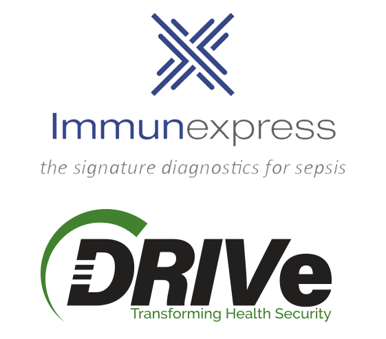

Announcements
October 2020
BARDA seeks abstract submissions for medical countermeasure development through the DRIVe ReDirect Program
Chemical agents are poisonous vapors, aerosols, liquids, and solids that have toxic health effects. Chemical attacks could occur without warning and injury or death often occurs shortly after exposure ...(more)
BARDA SEEKS ABSTRACT SUBMISSIONS FOR MEDICAL COUNTERMEASURE DEVELOPMENT THROUGH THE DRIVe ReDIRECT PROGRAM
Chemical agents are poisonous vapors, aerosols, liquids, and solids that have toxic health effects. Chemical attacks could occur without warning and injury or death often occurs shortly after exposure. The availability of effective MCMs against chemical threats are critical in the treatment of their acute health effects following exposures. The U.S. Department of Health and Human Services (HHS) today announced the opening of an Easy Broad Agency Announcement (EZ-BAA) for development of repurposed therapeutics as medical countermeasures against chemical threats and is now accepting abstract submissions for potential funding.
Under this EZ BAA, the Biomedical Advanced Research and Development Authority (BARDA), part of the HHS Office of the Assistant Secretary for Preparedness and Response, will review concise abstract submissions for funding of repurposing easily accessible therapeutics as medical countermeasures against threats such as chlorine gas, opioid exposures, and nerve agents. To learn more, please visit www.TBD.gov.
The EZ-BAA was created to provide a streamlined process through which BARDA and BARDA's Division of Research, Innovation, and Ventures (DRIVe) can review and accept applications for development funding of transformative products and technologies to protect Americans from health security threats. The application process is both business-friendly and easy to follow.
Since its inception, BARDA DRIVe's EZ-BAA solicitation has averaged more than one abstract submission per day while active, with awards made in as few as 30 days. The EZ-BAA has helped transform the contracting process and provide innovators, entrepreneurs, and organizations with a simplified and rapid mechanism to partner with the U.S. government.
For additional information, see solicitation BAA-20-100-SOL-0002.
About HHS, ASPR, and BARDA
HHS works to enhance and protect the health and well-being of all Americans, providing for effective health and human services and fostering advances in medicine, public health, and social services. The mission of ASPR is to save lives and protect Americans from 21st century health security threats. Within ASPR, BARDA invests in the advanced research and development, acquisition, and manufacturing of medical countermeasures – vaccines, drugs, therapeutics, diagnostic tools, and non-pharmaceutical products needed to combat health security threats. To date, 54 BARDA-supported products have achieved regulatory approval, licensure or clearance. BARDA DRIVe brings together the best ideas from the medical and scientific communities, together with government and venture capital investment, to drive innovation that will strengthen our nation's health security. To learn more about preparing for and responding to public health emergencies, from new infectious diseases to natural disasters and bioterrorism, by visiting the HHS public health emergency website, www.phe.gov. For more information on partnering with BARDA on developing medical countermeasures, visit www.medicalcountermeasures.gov, and for more on DRIVe, visit drive.hhs.gov.
October 2, 2020
Announcements
August 2020
BARDA establishes four new partnerships to explore innovative vaccine delivery technologies
New vaccine delivery technologies could provide individuals with a broader range of options for immunization, including ones that are easier to use and potentially more effective than traditional vaccination ...(more)
BARDA establishes four new partnerships to explore innovative vaccine delivery technologies
New vaccine delivery technologies could provide individuals with a broader range of options for immunization, including ones that are easier to use and potentially more effective than traditional vaccination with needle and syringe. With the potential for self-administration, these technologies could also expand the range of available care settings, allowing for wider coverage and ultimately improving the capability to reach herd immunity for many diseases.
BARDA will explore the feasibility of two innovative approaches with four new partners: Esperovax, Inc., the University of Connecticut, Vaxess Technologies, and Verndari, Inc. The novel routes of administration they are developing could reduce the dependence on needles and syringes that are used to deliver vaccine via intramuscular injection. Instead, a wearable skin patch or oral option for vaccines may support rapid, large-scale immunization while reducing the strain on the manufacturing supply chain.
The Egress RDTM mRMA oral cellular delivery technology from Esperovax, Inc. is a technology aiming to provide a cost-effective immunization that improves uptake with the potential for self-administration.
The other vaccine technologies – from the University of Connecticut, Vaxess and Verndari – collectively known as Micro Array Patches (MAP), would deliver vaccine using a microneedle patch worn on the skin as an alternative to standard inoculation.
With support from BARDA, the four partners will each advance the development of their respective products, formulate and optimize materials, and demonstrate their ability to effectively administer vaccine. If successful, these technologies could have a profound impact on the potential to offer better options to improve vaccine coverage.
These awards are part of BARDA’s rapidly expanding COVID-19 medical countermeasure portfolio; visit BARDA’s COVID-19 Portfolio to learn more.
About the Companies:
The following information is provided by the company and does not indicate an endorsement by the federal government of the company or its products.
Esperovax:
Esperovax looks to become the global leader in oral tablet/capsule vaccinations for some of the world's deadliest treatable diseases by leveraging its new oral vaccine platform. Their delivery system holds the potential to provide billions of doses annually that could be delivered by mail and consumed directly by the consumer without the need to visit a healthcare setting. The oral platform holds a potential for significant expansion of vaccination to the most vulnerable and in need, at a fraction of traditional cost.
The University of Connecticut (UConn):
Dr. Nguyen and his lab at UConn have developed a process to manufacture a vaccine microneedle (MN) skin patch that only requires single-time administration to automatically deliver vaccine antigens repeatedly, similar to the use of multiple bolus injections, over a long period. They have shown that the MNs can deliver a clinical vaccine of Prevnar-13 against the pneumococcal infection (which causes pneumonia like COVID-19). They have started the study on the S-protein from a small urgent funding from UConn, School of Engineering to test/stabilize the S-protein (as a COVID-19 vaccine) in their MNs, and evaluate the antigenicity of the vaccine MNs (with only single administration) for a long-term immune-protection in an animal model.
Vaxess Technologies, Inc.:
Vaxess is developing next-generation vaccines that are not only more protective but also more accessible for people at home and around the world. Vaxess is developing its proprietary MIMIX™ therapies based on technology originally developed at Tufts University and MIT. With just minutes of wear-time, the shelf-stable, self-applied MIMIX™ patch enables sustained release of treatments in the skin over weeks to months. Vaxess is a venture-funded company that is also supported by the NIH, NSF, and DARPA.
Verndari:
Verndari, Inc. was founded in 2015 with the goal of transforming global health through next generation vaccine development and delivery. The privately held company based in Napa, California, aims to treat existing and emerging diseases, with rapid response to new viral threats such as COVID-19 as well as to produce more effective vaccinations for existing viruses, such as influenza, enabling delivery at lower cost to populations around the world. Verndari’s unique VaxiPatch™, a single-dose vaccination kit using a microneedle dermal technology, offers advantages that include dose sparing, improved efficacy, and pain-free delivery - while making vaccine administration much simpler. The technology eliminates the need for refrigeration and facilitates high-volume automated manufacturing of vaccines. Through innovation in vaccine science, Verndari aims to address many different diseases and to save countless lives. For more information on Verndari, please visit https://verndariinc.com.
June 25, 2020
June 2020
BARDA partners with Colorado State University’s Infectious Disease Research Center (IDRC) to further develop the SolaVAXTM platform to address COVID-19
BARDA is partnering with Colorado State University’s Infectious Disease Research Center (IDRC) to further develop SolaVAXTM. The SolaVAX TM platform uses a proprietary technology to inactivate a virus ...(more)
BARDA partners with Colorado State University’s Infectious Disease Research Center (IDRC) to further develop the SolaVAXTM platform to address COVID-19
BARDA is partnering with Colorado State University’s Infectious Disease Research Center (IDRC) to further develop SolaVAXTM. The SolaVAX TM platform uses a proprietary technology to inactivate a virus with low risk to the patient. This project will demonstrate the utility of the SolaVAX TM process to inactivate SARS-CoV-2. The technology is expandable with potential to advance vaccine manufacturing capabilities to meet vaccine needs globally.
The SolaVAX TM process utilizes Riboflavin and UV light to carry out specific DNA and RNA chemistry with viral, bacterial, or cellular agents that subsequently may be used in vaccine preparations. The photochemistry of Riboflavin and UV light has been shown to be specific to nucleic acids and not induce damage or modification to the viral protein antigens that serve as the immunogens in the host. By preventing replication of the target agent, such as the SARS-COV-2 virus, while minimizing or reducing the amount of peripheral damage caused, a particle can be generated that contains all the potential antigenic targets for immune response without the capacity for replication post-infection.
Researchers at Colorado State University intend to test this platform with stock virus cultures grown in the CSU’s BioMARC BSL-3 facility, a cGMP compliant manufacturing facility operated by the University on a non-profit basis. BioMARC has the capability and capacity to produce large quantities of viruses, perform inactivation procedures, and operates BSL-3 labs safely for high-containment biological manufacturing operations. This facility was established as a Regional Center of Excellence and currently operates as part of the Regional Biocontainment/National Biocontainment laboratory network under the National Institute of Allergy and Infectious Diseases, part of the National Institutes of Health.
During this pandemic, the ability to produce large quantities of vaccines in a cost-effective manner is critical. The SolaVAX TM platform has already been shown to inactivate MERS-CoV, another virus in the coronavirus family, efficiently and has been evaluated for production in other types of vaccine delivery systems. The specific technology used in the SolaVAX platform provides for low toxicity and thus easy handling, distribution, and manufacturing of vaccines. The technology may provide an inexpensive, fast, safe, clean, and potentially better inactivation technology than what is currently available.
This award is one component of BARDA’s rapidly expanding COVID-19 medical countermeasure portfolio. Visit BARDA’s COVID-19 Portfolio to learn more.
About Colorado State University:
The following information is provided by the company and does not indicate an endorsement by the federal government of the company or its products.
Founded in 1870 as the Colorado Agricultural College, Colorado State University is now among the nation’s leading research universities, with annual research expenditures approaching $400 million. The CSU System includes the flagship campus in Fort Collins as well as CSU- Pueblo and CSU-Global. In Fort Collins, CSU currently enrolls about 33,000 students, including 4,000 graduate students and 580 in the Doctor of Veterinary Medicine program, and has more than 1,800 faculty members working in eight colleges. CSU’s DVM program consistently ranks among the top three veterinary medicine programs in the nation.
June 25, 2020
BARDA partners with MBio Diagnostics to develop an in vitro point-of-care serology test for the detection of human anti-SARS-CoV-2 antibodies from whole blood samples
BARDA and MBio Diagnostics are committed to a public-private partnership to develop a test for COVID-19. The MBio COVID-19 Serology Test ...(more)
BARDA partners with MBio Diagnostics to develop an in vitro point-of-care serology test for the detection of human anti-SARS-CoV-2 antibodies from whole blood samples
BARDA and MBio Diagnostics are committed to a public-private partnership to develop a test for COVID-19. The MBio COVID-19 Serology Test is a rapid point-of-care serology test being designed to provide results in 5 minutes. This is a multiplexed cartridge-based lateral flow test that looks for anti-SARS-CoV-2 antibodies from active or past infections and allows on-site screening of people in non-professional settings such as a drive-thru setting or a walk-up testing site. The test also can assist in immunity assessment while broadening testing options.
The rapid point-of-care serology test will use MBio’s LightDeck® platform, and detect IgG (found in the blood and formed after infection) and IgM (formed while the body fights a new infection). The new test will quantify total antibody reactivity to three individual SARS-CoV-2 antigens which could provide critical data to aid in COVID-19 immunity assessment.
This award is one component of BARDA’s rapidly expanding COVID-19 medical countermeasure portfolio; visit BARDA’s COVID-19 Portfolio to learn more.
About the Company
The following information is provided by the company and does not indicate an endorsement by the federal government of the company or its products.
MBio Diagnostics provides rapid, on-the-spot testing solutions for our global commercial partners. Our portable LightDeck® platform delivers panels of lab quality results in minutes for critical applications in health care, veterinary, and environmental industries. About LightDeck® Technology MBio’s patented LightDeck® technology system translates laboratory assays into on the-spot, critical decisions in minutes. Our LightDeck® platform incorporates low cost, multiplexed cartridges with our fluorescent readers and intuitive software, with the ability to measure more than 50 analytes in a single cartridge. Our partners use LightDeck® technology to test key analytes across many applications for competitive advantages in the areas of quantitative sensitivity, multiplexing, and speed.
June 23, 2020
BARDA and Empatica forge new partnership to develop an early monitoring platform to identify COVID-19 infection
BARDA and Empatica embark on a new partnership to develop and seek U.S. Food and Drug Administration’s Emergency Use Authorization for Aura, a wearable system and algorithm that can ...(more)
BARDA and Empatica forge new partnership to develop an early monitoring platform to identify COVID-19 infection
BARDA and Empatica embark on a new partnership to develop and seek U.S. Food and Drug Administration’s Emergency Use Authorization for Aura, a wearable system and algorithm that can serve as an early warning platform for COVID-19 infections.
This system will utilize a wearable physiological monitor, Empatica’s E4 wristband device, to detect early signs of infection in individuals. Study participants also will self-collect daily nasal swabs, self-report symptoms, and self-collect daily saturated oxygen read-outs for analysis by Empatica. All data will be used to fine-tune and validate Empatica’s early diagnostic algorithm, which will provide a probability of infection.
The results will be shared with the user via a mobile application and a caregiver through a web dashboard. The overall goal of the platform is to provide an early warning to COVID-19 contagion, helping reduce the transmission of infected individuals and save lives.
Individuals infected with SARS-CoV-2 may only seek diagnostic tests once they begin exhibiting symptoms. Empatica aims to disrupt this health-care paradigm by detecting infection in individuals before the onset of symptoms. This project will leverage data from a previous partnership with BARDA on early detection of respiratory infection, and include a clinical study monitoring at-risk healthcare workers for COVID-19. The goal is to alert healthcare workers and patients to infection early, preventing further spread by allowing for early self-quarantine, treatment, and care.
This award is one component of BARDA’s rapidly expanding COVID-19 medical countermeasure portfolio; visit BARDA’s COVID-19 Portfolio to learn more.
About the Company
The following information is provided by the company and does not indicate an endorsement by the federal government of the company or its products.
Empatica is a digital health company that designs and develops medical wearables, software and digital biomarkers, providing an AI-enabled platform to advance the health monitoring, forecasting, treatment and research of medical conditions. A pioneer in the enablement of continuous, unobtrusive patient monitoring, Empatica's platform uses a combination of biosensors to detect features of human physiology that are distilled in AI-based algorithms and can remotely monitor autonomic activity, movement, sleep and cardiac activity. Empatica's devices are FDA cleared and CE-marked and have been sold to thousands of companies and institutional partners for clinical trials, health monitoring, and research, examining stress, sleep, epilepsy, migraine, depression, addiction and many other conditions. Their upcoming EmbracePlus device has been built to monitor the health of astronauts on NASA's journeys to Mars, but will also be used to monitor the health of individuals here on Earth.
June 18, 2020
BARDA supports development of two automated antibody tests for COVID-19 by Ortho Clinical Diagnostics
BARDA is pleased to announce a partnership with Ortho Clinical Diagnostics to further develop two automated antibody tests for COVID-19. ...(more)
BARDA supports development of two automated antibody tests for COVID-19 by Ortho Clinical Diagnostics
BARDA is pleased to announce a partnership with Ortho Clinical Diagnostics to further develop two automated antibody tests for COVID-19.
The VITROS® Anti-SARS-COV-2 Total test detects all COVID-19 related antibodies (IgA, IgM and IgG) and the VITROS® Anti-SARS-COV-2 IgG test detects the IgG antibody, which appears in a patient’s blood in the later phase of infection and remains elevated even after recovery.
These tests offer choices in tracking, surveillance and patient management and may be useful in identifying people who have recovered from COVID-19 and could be eligible to donate convalescent plasma for use as a possible treatment for hospitalized COVID-19 patients.
Both tests can run on Ortho’s high-throughput, random access, fully-automated VITROS® Systems including the VITROS® XT 7600 Integrated System, the VITROS® 3600 Immunodiagnostic System, the VITROS® 5600 Integrated System, and the VITROS® ECi/ECiQ Immunodiagnostic Systems. Ortho has already installed these analyzers in more than 1,000 hospitals and labs across the U.S.
Ortho Clinical Diagnostics plans to manufacture several millions of tests per week.
This award is one component of BARDA’s rapidly expanding COVID-19 medical countermeasure portfolio; visit BARDA’s COVID-19 Portfolio to learn more.
About the Company
The following information is provided by the company and does not indicate an endorsement by the federal government of the company or its products.
Ortho Clinical Diagnostics a global leader of in vitro diagnostics dedicated to improving and saving lives through innovative laboratory solutions, serves the clinical laboratory and immunohematology communities. Ortho’s high-quality products and services help hospitals, hospital networks, blood banks and labs in more than 125 countries and territories deliver consistently fast, accurate, and reliable results that allow clinicians to make better-informed treatment decisions. Ortho’s lab solutions provide sophisticated testing technologies, automation, information management, and interpretation tools to clinical laboratories to help them run more efficiently and effectively and improve patient care. Ortho’s blood typing products help ensure every patient receives blood that is safe, the right type and the right unit.
For more information about Ortho’s solutions and services, visit www.orthoclinicaldiagnostics.com
June 18, 2020
BARDA and Immunexpress Inc. expand partnership to evaluate a sepsis host-based laboratory diagnostic to triage COVID-19 patients
BARDA and Immunexpress Inc. are collaborating to determine the risk of sepsis in COVID-19 patients in the hospital emergency department or ICU. These studies will be used to support 510(k) Food and ...(more)
BARDA and Immunexpress Inc. expand partnership to evaluate a sepsis host-based laboratory diagnostic to triage COVID-19 patients
BARDA and Immunexpress Inc. are collaborating to determine the risk of sepsis in COVID-19 patients in the hospital emergency department or ICU. These studies will be used to support 510(k) Food and Drug Administration filing of the SeptiCyte® RAPID diagnostic test for sepsis, including virally induced sepsis caused by the SARS-CoV-2 virus. Immunexpress will evaluate its CE-marked Septicyte® RAPID assay as a sepsis triage tool for patients who show escalating signs of COVID-19 disease.
In light of the current COVID-19 pandemic and a surge of critically ill patients being admitted to hospitals, healthcare providers need technologies that can assist with rapid early identification of patients likely to progress to severe disease that need clinical intervention. Immunexpress has developed SeptiCyte® RAPID, a host-based gene expression assay to rapidly assess patients suspected of infection for their likelihood to progress to sepsis. SeptiCyte® RAPID will be validated for its ability to effectively triage COVID-19 patients for risk of viral sepsis.
The SeptiCyte® host response assay uses a novel gene signature for rapid assessment of a patient’s immune response to infection. The test uses an automated cartridge format on the Biocartis IdyllaTM molecular diagnostic platform and provides results in less than 90 minutes. The overall solution is expected to allow clinicians to detect patients at risk of increased disease severity in COVID-19 to facilitate appropriate resource allocation and early treatment for those with higher risk. This study is part of BARDA’s Rapidly Deployable Capabilities program to identify and pilot near-term innovative solutions for COVID-19.
This award is one component of BARDA’s rapidly expanding COVID-19 medical countermeasure portfolio; visit BARDA’s COVID-19 Portfolio to learn more.
About the Company
The following information is provided by the company and does not indicate an endorsement by the federal government of the company or its products.
Immunexpress is a molecular diagnostic company based out of Seattle, Washington, USA, committed to improving outcomes for patients suspected of sepsis. Immunexpress' SeptiCyte® technology can assess a patient’s immune response by quantifying and analyzing gene expression signatures from whole blood, providing actionable results in about an hour to guide the physician in optimizing patient management decisions. SeptiCyte® RAPID combines SeptiCyte® technology with the Biocartis Idylla™ platform, empowering clinicians to swiftly differentiate infection positive (sepsis) from infection negative systemic inflammation in patients suspected of sepsis. This powerful combination of technologies enhances certainty for early sepsis diagnosis, to improve clinical outcomes and lower healthcare costs.
June 15, 2020
BARDA DRIVe and Sepsis Alliance to provide educational content on COVID-19 and Sepsis
Sepsis Alliance and BARDA’s Division of Research, Innovation and Ventures (DRIVe) are partnering to provide two high-quality, evidence-based education and training webinars ...(more)
BARDA DRIVe and Sepsis Alliance to provide educational content on COVID-19 and Sepsis
Sepsis Alliance and BARDA’s Division of Research, Innovation and Ventures (DRIVe) are partnering to provide two high-quality, evidence-based education and training webinars on sepsis and COVID-19 in order to improve patient outcomes and save lives. Understanding the connection between severe COVID-19 and sepsis is essential for healthcare providers in treating their patients and can help save lives. These two new webinars will focus on emerging infectious diseases and sepsis as well as treating COVID-19 survivors and post-sepsis sequelae.
Almost any infection can lead to sepsis, including COVID-19, the infection caused by the SARS-COV-2 virus. Understanding the correlation between infections and sepsis will improve our response to the current COVID-19 pandemic as well as improve preparedness for future health security threats. As healthcare providers learn more about COVID-19, understanding the challenges that survivors of COVID-19 and viral sepsis face will help improve long-term outcomes for these patients. These webinars will provide critical educational tools to help healthcare providers manage the recovery of COVID-19 patients and patients who develop sepsis from other emerging infectious diseases.
BARDA has partnered with Sepsis Alliance to develop other educational content for The Sepsis Institute, an online learning platform created by Sepsis Alliance that provides healthcare professional across the continuum of care with high quality, evidence-based sepsis education and training.
This announcement is one component of BARDA’s rapidly expanding COVID-19 medical countermeasure portfolio; visit BARDA’s COVID-19 Portfolio to learn more.
About the Company
The following information is provided by the company and does not indicate an endorsement by the federal government of the company or its products.
Sepsis Alliance is the first and leading sepsis organization in the U.S., working to save lives and reduce suffering by improving sepsis awareness and care. In 2011, Sepsis Alliance designated September as Sepsis Awareness Month to bring healthcare professionals and community members together in the fight against sepsis. Sepsis Alliance hosts the Sepsis Coordinator Network and The Sepsis Institute, platforms for peer-to-peer interaction and continuing education for healthcare providers. Sepsis Alliance gives a voice to the millions of people who have been touched by sepsis – to the survivors, and the friends and family members of those who have survived or who have died. Since 2003, sepsis awareness in the U.S. has risen from 19% to 65%. Sepsis Alliance is a GuideStar Gold Rated Charity. For more information, please visit www.sepsis.org. Connect with us on Facebook and Twitter at @SepsisAlliance.
June 11, 2020
BARDA, Snapdragon Chemistry Inc., demonstrate deployable domestic manufacturing technology for COVID-19 vaccine component
BARDA and Snapdragon Chemistry Inc. of Waltham, Massachusetts, will work together over the next year to develop and demonstrate an innovative continuous manufacturing platform ...(more)
BARDA, Snapdragon Chemistry Inc., demonstrate deployable domestic manufacturing technology for COVID-19 vaccine component
Development of rapidly scalable, deployable, platform for U.S.-based continuous manufacturing of NTPs could boost pandemic vaccines production.
BARDA and Snapdragon Chemistry Inc. of Waltham, Massachusetts, will work together over the next year to develop and demonstrate an innovative continuous manufacturing platform to produce ribonucleotide triphosphates (NTPs), a critical raw material for COVID-19 vaccines that use messenger RNA technology. The project includes a rapidly scalable, continuous manufacturing process for the chemical synthesis and purification of NTPs.
Messenger RNA (mRNA) is present in all living cells and carries instructions from the DNA (deoxyribonucleic acid) of one cell to another. Currently, one of the COVID-19 vaccines being developed with federal funding use mRNA technology and rely on NTPs.
With a small footprint and low capital cost, multiple identical platforms can be deployed to vaccine manufacturing facilities in the United States, providing a more reliable way of producing the NTP component of some COVID-19 vaccines.
In supporting Operation Warp Speed, BARDA is working to remove any possible barriers to vaccine production and provide the core services and expertise private sector partners need to accelerate development and manufacturing, including improving the U.S.-based production of raw materials.
This award is one component of BARDA’s rapidly expanding COVID-19 Medical countermeasure portfolio, visit BARDA’s COVID-19 Portfolio to learn more.
About the Company
The following information is provided by the company and does not indicate an endorsement by the federal government of the company or its products.
Snapdragon Chemistry is a chemical technology company focused on the design and development of efficient and sustainable manufacturing processes for fine chemicals and pharmaceuticals. With our expertise in continuous manufacturing, combined with proprietary R&D technologies and a talented team of scientist and engineers, we deliver highly intensified and controlled manufacturing processes for even the most complex molecules. For more information visit us at: www.snapdragonchemistry.com.
June 11, 2020
Latest BARDA collaboration with OraSure Technologies Inc. aims to develop highly reliable, high-throughput diagnostic test for SARS-CoV-2 antibodies in oral fluids
BARDA and OraSure Technology, Inc. are partnering again, this time on development of an in vitro (laboratory) diagnostic to detect antibodies for the SARS-CoV-2 virus in oral fluids ...(more)
Latest BARDA collaboration with OraSure Technologies Inc. aims to develop highly reliable, high-throughput diagnostic test for SARS-CoV-2 antibodies in oral fluids
BARDA and OraSure Technology, Inc. are partnering again, this time on development of an in vitro (laboratory) diagnostic to detect antibodies for the SARS-CoV-2 virus in oral fluids. Currently there are no SARS-CoV-2 antibody tests based on oral fluids available for high-throughput ELISA screening.
Although the test could be used at point of care facilities such as doctors’ offices, clinics, or hospitals, the goal is to have patients collect their own saliva samples at home to maintain social distancing and then ship their sample to the lab. Oral fluid collection is non-invasive and requires less human contact in comparison to blood draw. At-home self-collection also minimizes health care workers’ exposure to potentially infected patients and permits a large number of individuals to be screened quickly.
OraSure plans to leverage the 510(k) cleared Drugs of Abuse (DOA) ELISA platform as the starting point to develop this ELISA-based coronavirus antibody test. The test is being designed to run on automated ELISA instruments, such as Hamilton and Dynex instruments. Development includes a version of the test to detect human anti-Nucleocapsid protein (NP) and/or human anti-Spike 1 (S1) total antibody for the screening of acute infection in a symptomatic population.
Both human anti-NP and anti-S1 IgM and IgG antibodies have been reported to rise in COVID-19 patients within days after the onset of symptoms. With BARDA support, OraSure expects to request FDA’s Emergency Use Authorization from the U.S. Food and Drug Administration within the next five months or sooner. If the EUA is granted, usability and flex studies will be conducted to support self-collection use of the device for home collections and the company will submit data as an amendment to the EUA.
This award is one component of BARDA’s rapidly expanding COVID-19 medical countermeasure portfolio. Visit BARDA’s COVID-19 Portfolio to learn more.
About the Company
The following information is provided by the company and does not indicate an endorsement by the federal government of the company or its products.
OraSure Technologies empowers the global community to improve health and wellness by providing access to accurate, essential information. Together with its wholly-owned subsidiaries (DNA Genotek, CoreBiome, Diversigen and Novosanis), OraSure provides its customers with end-to-end solutions that encompass tools, services and diagnostics. The OraSure family of companies is a leader in the development, manufacture, and distribution of rapid diagnostic tests, sample collection and stabilization devices, and molecular services solutions designed to discover and detect critical medical conditions. OraSure’s portfolio of products is sold globally to clinical laboratories, hospitals, physician’s offices, clinics, public health and community-based organizations, research institutions, government agencies, pharma, commercial entities and direct to consumers. For more information on OraSure Technologies, please visit www.orasure.com.
June 10, 2020
BARDA partners with Evidation Health to identify COVID-19 infections more quickly in healthcare workers and first responders using self-monitoring and wearable devices
BARDA is pleased to announce a partnership with Evidation Health of San Mateo, California, to monitor healthcare workers and first responders by leveraging de-identified, patient-generated health data...(more)
BARDA partners with Evidation Health to identify COVID-19 infections more quickly in healthcare workers and first responders using self-monitoring and wearable devices
BARDA is pleased to announce a partnership with Evidation Health of San Mateo, California, to monitor healthcare workers and first responders by leveraging de-identified, patient-generated health data from existing wearable devices as an early warning algorithm to identify early symptoms of COVID-19.
This study is part of BARDA’s Rapidly Deployable Capabilities program to identify and pilot near term innovative solutions for identifying individuals who have COVID-19 infections. Individual and population-based data will be collated into computer models to improve “real-time” COVID-19 incidence prediction of both symptomatic and asymptomatic patients and enhance current disease surveillance systems to detect respiratory infections prior to the onset of symptoms.
SARS-CoV-2, the virus that causes COVID-19, is highly transmissible and is causing unprecedented social behavior changes in the country as many are being impacted by stay-at- home guidance’s from health officials. One of the biggest challenges with combating the virus is being able to detect those who are infected but either have not yet progressed to symptoms or will not show symptoms of the disease, as these individuals may be able to transmit without realizing it. In addition, the symptoms of COVID-19 appear to vary greatly in individuals and over the course of infection, and these will be correlated with confirmed COViD-19 diagnosis and hospitalization.
This project builds on Evidation’s current partnership with BARDA to monitor individuals for respiratory infections, such as influenza. This pilot study will demonstrate utility of empowering Americans with a novel means to self-monitor to improve health outcomes for COVID-19. The study will initiate with healthcare workers and first responders, who are our nation’s front-line responders, to more readily be diagnosed to prevent exposure to others. The study has the potential for large-scale deployment to allow Americans to determine risk of COVID-19 and to appropriately implement precautions against spread of COVID-19 and other such diseases.
This award is one component of BARDA’s rapidly expanding COVID-19 medical countermeasure portfolio. Visit BARDA’s COVID-19 Portfolio to learn more.
About the Company
The following information is provided by the company and does not indicate an endorsement by the federal government of the company or its products.
Evidation Health is a new kind of health and measurement company that provides the world’s most innovative life sciences and health care companies the technology and expertise they need to understand how everyday behavior and health interact. The volume of behavior data generated from smartphones and connected sensors — including wearables and medical devices — has opened up new ways to analyze individuals’ behavior and health in real time, unlocking insights into what medicines and treatments work best and spotting significant changes in health earlier. The scale and utility of everyday behavior data has the potential to be one of the most transformative forces in medicine, and Evidation Health is leading the way.
June 4, 2020
BARDA partners with Quidel Corporation to develop one-hour, mobile-integrated multiplex test on Sofia platform to detect SARS-COV-2 plus three additional respiratory viruses
BARDA and Quidel Corporation entered into a partnership to develop a rapid multi-analyte diagnostic test for use on the Sofia 2 assay system to detect the SARS-CoV-2 virus...(more)
BARDA partners with Quidel Corporation to develop one-hour, mobile-integrated multiplex test on Sofia platform to detect SARS-COV-2 plus three additional respiratory viruses
BARDA and Quidel Corporation entered into a partnership to develop a rapid multi-analyte diagnostic test for use on the Sofia 2 assay system to detect the SARS-CoV-2 virus within an hour. Results are provided to users and integrated into a cloud-based mobile platform that can convey de-identified test results to public health agencies. This capability could help public health departments monitor the spread of COVID-19 infections and take action to help decrease the number of infections in their communities.
The company will develop the Quidel Sofia SARS-CoV-2 viral antigen-detection assay as a rapid, sample-to-answer, point-of-care test that is CLIA waived for possible use in doctors’ offices and sensitive enough for early detection of SARS-CoV-2 in samples taken from people who have COVID-19 symptoms. The test will also simultaneously detect and distinguish other viruses apart from SARS-CoV-2 including respiratory syncytial virus (RSV) influenza A and influenza B.
This SARS-CoV-2 test development project will use clinical respiratory specimen data for submission in the coming months to the U.S. Food and Drug Administration for the FDA to consider Emergency Use Authorization.
This award is part of BARDA’s rapidly expanding COVID-19 medical countermeasure portfolio. Visit BARDA’s COVID-19 Portfolio to learn more.
About the Company
The following information is provided by the company and does not indicate an endorsement by the federal government of the company or its products.
Quidel Corporation serves to enhance the health and well-being of people around the globe through the development of diagnostic solutions that can lead to improved patient outcomes and provide economic benefits to the healthcare system. Marketed under the Sofia®, QuickVue®, D3® Direct Detection, Thyretain®, Triage® and InflammaDry® leading brand names, as well as under the new Solana®, AmpliVue® and Lyra® molecular diagnostic brands, Quidel’s products aid in the detection and diagnosis of many critical diseases and conditions, including, among others, influenza, respiratory syncytial virus, Strep A, herpes, pregnancy, thyroid disease and fecal occult blood. Quidel's recently acquired Triage® system of tests comprises a comprehensive test menu that provides rapid, cost-effective treatment decisions at the point-of-care (POC), offering a diverse immunoassay menu in a variety of tests to provide diagnostic answers for quantitative BNP, CK-MB, d-dimer, myoglobin, troponin I and qualitative TOX Drug Screen. Quidel’s research and development engine is also developing a continuum of diagnostic solutions from advanced immunoassay to molecular diagnostic tests to further improve the quality of healthcare in physicians’ offices and hospital and reference laboratories. For more information about Quidel’s comprehensive product portfolio, visit quidel.com.
June 2, 2020
BARDA announces partnership with Siemens Healthineers to develop automated total antibody test for COVID-19
BARDA entered into a partnership with Siemens Healthineers to accelerate development of the SARS-CoV-2 total antibody test. This laboratory-based total antibody test can be used to detect ...(more)
BARDA announces partnership with Siemens Healthineers to develop automated total antibody test for COVID-19
BARDA entered into a partnership with Siemens Healthineers to accelerate development of the SARS-CoV-2 total antibody test. This laboratory-based total antibody test can be used to detect the presence of both SARS-CoV-2 IgM and the longer-lasting IgG antibodies in human serum and plasma. Serology-based tests like the SARS-CoV-2 total antibody test can be used as an aid in identifying patients with an adaptive immune response to SARS-CoV-2, indicating a recent or prior infection.
Siemens has over 2,000 fully automated immunoassay analyzers in hospitals and mid to high volume reference laboratories across all 50 states. Siemens immunoassay analyzers include the Atellica® IM which can run up to 440 tests per hour with a result in 10 minutes and the ADVIA Centaur® XP and XPT analyzers, which can test up to 240 samples per hour with a result in 18 minutes.
Starting in June, Siemens Healthineers will ramp up production at the company’s facilities in Walpole, Massachusetts, and Newark, Delaware, with capacity exceeding 50 million antibody tests per month.
Both the Atellica® IM SARS-CoV-2 Total (COV2T) and the ADVIA Centaur® SARS-CoV-2 Total (COV2T) were granted Emergency Use Authorization (EUA) from the U.S. Food and Drug Administration (FDA) on May 29, 2020.
This award is one component of BARDA’s rapidly expanding COVID-19 medical countermeasure portfolio; visit BARDA’s COVID-19 Portfolio to learn more.
About the Company
The following information is provided by the company and does not indicate endorsement by the federal government of the company or its products.
Siemens Healthineers AG (listed in Frankfurt, Germany: SHL) is shaping the future of Healthcare. As a leading medical technology company headquartered in Erlangen, Germany, Siemens Healthineers enables healthcare providers worldwide through its regional companies to increase value by empowering them on their journey towards expanding precision medicine, transforming care delivery, improving the patient experience, and digitalizing healthcare. Siemens Healthineers is continuously developing its product and service portfolio, with AI-supported applications and digital offerings that play an increasingly important role in the next generation of medical technology. These new applications will enhance the company’s foundation in in-vitro diagnostic, image-guided therapy, and in-vivo diagnostics. Siemens Healthineers also provides a range of services and solutions to enhance healthcare providers’ ability to provide high-quality, efficient care to patients. Further information is available at www.siemens-healthineers.com
June 2, 2020
May 2020
BARDA and VitalConnect partner to monitor nursing home and COVID-19 patients for early indication of patient deterioration
BARDA is partnering with VitalConnect to assess the ability of a wearable device to remotely monitor individuals during the COVID-19 outbreak for changes in health deterioration...(more)
BARDA and VitalConnect partner to monitor nursing home and COVID-19 patients for early indication of patient deterioration
BARDA is partnering with VitalConnect to assess the ability of a wearable device to remotely monitor individuals during the COVID-19 outbreak for changes in health deterioration, including but not limited to respiratory rate, body temperature, blood oxygen levels (SpO2) and heart arrhythmias, to improve patient outcomes. Nursing home patients, an at-risk population, will be continuously monitored for early indication of changes in health status or potentially inform on COVID-19 infection. In addition, in a separate cohort, COVID-19 patients will be monitored to determine any changes in health, including QT interval changes which may require an escalation in care.
The elderly and individuals with underlying medical conditions may be at higher risk for severe complications from COVID-19. Early indication of patient deterioration or cardiac arrhythmia will allow healthcare professionals to intervene earlier in order to improve clinical management of patients and health outcomes. These pilot clinical studies will be conducted as part of quality improvement to support use of these remote monitoring technologies as adjunctive diagnostic health support.
The Vista Solution incorporates four primary components; The VitalPatch clinical grade biosensor, a Vista Tablet, the VitalCloud, and the VistaCenter central monitoring station. Through the Vista Solution, clinicians can monitor up to 11 different patient vitals in real-time including those captured by the VitalPatch (single-lead EKG, heart rate, heart rate variability, respiratory rate, body temperature, body posture, fall detection, activity) and those captured by 3rd party devices (blood oxygen, weight, blood pressure). COVID-19 patients suffer from a variety of symptoms including respiratory distress, low blood oxygen levels, and cardiac arrhythmia, which can all be monitored with the Vista Solution.
This award is one component of BARDA’s rapidly Expanding COVID-19 medical countermeasure portfolio; visit BARDA’s COVID-19 Portfolio to learn more.
About the Company
The following information is provided by the company and does not indicate endorsement by the federal government of the company or its products.
VitalConnect is a leader in wearable biosensor technology for wireless patient monitoring in both hospital and remote patient populations. VitalConnect leverages extensive expertise in biomedical engineering, data analytics, chip design, and mobile and cloud software to create technology that supports decision-making paradigms that achieve better health and economic outcomes. VitalConnect’s products are designed for use in a broad range of inpatient and outpatient settings, such as hospital monitoring, post-discharge care, cardiac monitoring and pharmaceutical solutions.
For more information: www.vitalconnect.com.
May 20, 2020
BARDA Names First DRIVe Director
BARDA is pleased to announce Sandeep Patel, Ph.D. as the first director of the Division of Research, Innovation and Ventures (DRIVe)...(more)
BARDA Names First DRIVe Director
BARDA is pleased to announce Sandeep Patel, Ph.D. as the first director of the Division of Research, Innovation and Ventures (DRIVe).
Dr. Patel is committed to advancing high-impact science, building new products, and launching collaborative programs and initiatives with public and private organizations to advance human health and wellness. As the DRIVe Director, Dr. Patel will lead a dynamic team built to tackle complex national health security threats by rapidly developing and deploying innovative technologies and approaches that draw from a broad range of disciplines.
Dr. Patel brings extensive experience in public-private partnerships to DRIVe. Prior to joining the DRIVe team, he served as the HHS Open Innovation Manager. In that role, he focused on advancing innovative policy and funding solutions to complex, long-standing problems in healthcare. During his tenure, he successfully built KidneyX, a public-private partnership to spur development of an artificial kidney, helped design and execute the Advancing American Kidney Health Initiative, designed to catalyze innovation, double the number of organs available for transplant, and shift the paradigm of kidney care to be patient-centric and preventative, and included a Presidential Executive Order signed in July 2019. He also created the largest public-facing open innovation program in the U.S. government with more than 190 competitions and $45 million in awards since 2011.
Prior to his tenure at HHS, Dr. Patel co-founded Omusono Labs, a 3-D printing and prototyping services company based in Kampala, Uganda; served as a scientific analyst with Discovery Logic, (a Thomson Reuters company) a provider of systems, data, and analytics for real-time portfolio management; and was a Mirzayan Science and Technology Policy Fellow at The National Academies of Science, Engineering, and Medicine. He also served as a scientist at a nanotechnology startup, Kava Technology.
He holds a US patent issued in 2005 and has authored over a dozen peer-reviewed articles in areas such as nanotechnology, chemistry, innovation policy, and kidney health. Dr. Patel earned his Ph.D. in physical chemistry from the Georgia Institute of Technology, and has a bachelor’s degree in chemistry from Washington University in St. Louis.
May 11, 2020
April 2020
BARDA and InBios International, Inc. partner to expedite development for serological tests to identify asymptomatic or recovered cases of COVID-19
BARDA and InBios International, Inc. are collaborating on the rapid development of the SCoV-2 Ab Detect™ Rapid Test as a point-of-care assay (test) to detect SARS-CoV-2 reactive antibodies in a blood samples...(more)
BARDA and InBios International, Inc. partner to expedite development for serological tests to identify asymptomatic or recovered cases of COVID-19
BARDA and InBios International, Inc. are collaborating on the rapid development of the SCoV-2 Ab Detect™ Rapid Test as a point-of-care assay (test) to detect SARS-CoV-2 reactive antibodies in a blood samples.
The SCoV-2 Ab Detect™ Rapid Test will be a lateral flow “serodiagnostic” test, using blood products, including from a finger prick, to identify people infected with SARS-CoV-2, the virus that causes COVID-19 disease. By looking for an immune response to the virus, serology tests help healthcare providers and public health officials better quantify the number of cases of COVID-19 in the country, including among people who may not show symptoms or who have recovered.
In order to make the test more widely available, the company will acquire reagents, including patient samples, and will produce kits for, and carry out performance studies to validate the assay design in order to request Emergency Use Authorization (EUA) from the U.S. Food and Drug Administration (FDA). Making these tests available would increase U.S. testing capacity and help combat the current pandemic.
An EUA submission package will follow the FDA pre-EUA template and will include a proposed intended use statement, study performance data, and a draft package insert. A final EUA package submission is expected within 6 months of this award.
This award is one component of BARDA’s rapidly expanding COVID-19 medical countermeasure portfolio. Visit BARDA’s COVID-19 Portfolio to learn more.
About the Company
The following information is provided by Inbios and does not indicate endorsement by the federal government of the company or its products.
InBios International Inc. specializes in the design, development and manufacture of diagnostic devices for emerging infectious diseases and biothreats. Founded in 1996 in Seattle, WA, our superior quality products are accurate, easy to use and cost effective. InBios offers an extensive catalog of life science reagents, along with a portfolio of more than 25 diagnostic products, including FDA-cleared ELISA kits for Zika, dengue, and West Nile and rapid test kits for Chagas and leishmaniasis. InBios is GMP compliant, FDA registered, USDA licensed and ISO 13485:2016 certified.
April 27, 2020
BARDA announces partnership expansion with Cytovale, Inc. for continued development of Cytovale’s rapid diagnostic system for sepsis as part of COVID-19 pandemic response
BARDA and Cytovale, Inc. are expanding their partnership for additional advanced research and development of a diagnostic system being designed to diagnose sepsis in less than 10 minutes...(more)
BARDA announces partnership expansion with Cytovale, Inc. for continued development of Cytovale’s rapid diagnostic system for sepsis as part of COVID-19 pandemic response
Pilot study includes patients with suspected respiratory infections, including COVID-19, to evaluate use for predicting the likelihood of viral sepsis
BARDA and Cytovale, Inc. are expanding their partnership for additional advanced research and development of a diagnostic system being designed to diagnose sepsis in less than 10 minutes.
Cytovale’s rapid diagnostic system is a deformability cytometry platform, meaning that it analyzes the biomechanical properties of immune cells; this method may enable early and rapid diagnosis of sepsis. Receiving results in less than 10 minutes would enable timely and accurate triage in the emergency department, allow for more effective identification and treatment of sepsis, and help optimize use of valuable hospital resources.
To validate this rapid diagnostic system in identifying patients at risk of viral sepsis, Cytovale’s pilot study specifically will enroll patients suspected of respiratory infections, including COVID-19 patients, prior to conducting full validation studies. This pilot study is an important step in evaluating the system’s performance to rapidly identify the likelihood of sepsis in these patients in the emergency department.
The pilot study represents the expansion of a larger contract, first launched in September 2019, which includes executing analytical and clinical validation studies and preparing for manufacturing scale-up and validation, all of which are necessary for the U.S. Food and Drug Administration to consider clearance of the diagnostic system.
This specific study is part of BARDA’s Rapidly Deployable Capabilities program to identify and pilot near-term innovative solutions for COVID-19, leveraging the development of Cytovale’s rapid diagnostic system under BARDA’s Division of Research Innovation and Venture (DRIVe) Solving Sepsis Program.
About the Company
The following information is provided by company and does not indicate endorsement by the federal government of the company or its products.
Cytovale, based in San Francisco, Calif., is a medical technology company dedicated to revolutionizing diagnostics using cell mechanics and machine learning, and applying this first to sepsis, a condition whose early detection dramatically improves patient outcomes. For more information visit cytovale.com.
This award is one component of BARDA’s rapidly expanding COVID-19 Medical countermeasure portfolio, visit BARDA’s COVID-19 Portfolio to learn more.
April 23, 2020
BARDA and Tangen Biosciences, Inc. entered into a public-private partnership to develop a rapid diagnostic test for SARS-CoV-2
BARDA and Tangen Biosciences, Inc. entered into a partnership to develop a rapid diagnostic test for use on the Tangen GeneSparkTM molecular diagnostic system to detect the SARS-CoV-2...(more)
BARDA and Tangen Biosciences, Inc. entered into a public-private partnership to develop a rapid diagnostic test for SARS-CoV-2
BARDA and Tangen Biosciences, Inc. entered into a partnership to develop a rapid diagnostic test for use on the Tangen GeneSparkTM molecular diagnostic system to detect the SARS-CoV-2 virus with results available within an hour. Results are provided to users and integrated into a cloud-based mobile platform that can convey de-identified test results to public health agencies. This capability could help public health departments monitor the spread of the disease and decrease the number of infections in their communities.
The company will develop a test that is expected to be CLIA waived for use in doctors’ offices and is sensitive enough for early detection of SARS-CoV-2 in samples taken from the back of the nose or throat of people who have COVID-19 symptoms. The Tangen Dx SARS-CoV-2 uses a manual workflow followed by amplification and detection on the GeneSparkTM nucleic acid amplification instrument. Turnaround time from sample collection to result is approximately one hour per sample.
Upon successful development, the company will seek Emergency Use Authorization (EUA) from the U.S. Food and Drug Administration (FDA).
This award is one component of BARDA’s rapidly expanding COVID-19 medical countermeasure portfolio. Visit BARDA’s COVID-19 Portfolio to learn more.
About the Company
The following information is provided by the company and does not indicate endorsement by the federal government of the company or its products.
Tangen Biosciences, Inc. was founded in 2013 and is located in Branford, Connecticut. The company developed the TangenDx™ platform for fast and accurate detection of targeted DNAs and RNAs directly from specimens by using rotary rapid isothermal nucleic acid detection. The Tangen system consists of the TangenDx™ disc and the GeneSpark™ instrument, an automated amplification device. The TangenDx™ platform does not require laboratory facilities and will deliver faster, simpler, more sensitive detection at a lower cost than other commercial technologies. Current tests include Candida auris, sepsis causing bacteria, antibiotic resistance genes, and a Candida blood panel.
April 20, 2020
BARDA supports Hememics Biotechnologies, Inc to develop a rapid antigen and antibody diagnostic to identify current or past SARS-CoV-2 infections in 60 seconds
BARDA is collaborating with Hememics Biotechnologies, Inc. on the development of a rapid, Bluetooth-connected SARS-CoV-2 diagnostic test. The test is being designed to detect SARS-CoV-2 antigen...(more)
BARDA supports Hememics Biotechnologies, Inc to develop a rapid antigen and antibody diagnostic to identify current or past SARS-CoV-2 infections in 60 seconds
BARDA is collaborating with Hememics Biotechnologies, Inc. on the development of a rapid, Bluetooth-connected SARS-CoV-2 diagnostic test. The test is being designed to detect SARS-CoV-2 antigen from nasal swab samples and associated antibodies in 60 seconds or less through a finger-prick.
Using the nasal swab antigen test, healthcare providers can triage patients infected with SARS-CoV-2 rapidly and make informed treatment decisions. Furthermore, antibody testing of blood to identify serological antibodies indicates which patients have been previously infected, even without showing symptoms, and recovered or those who could be potentially developing an infection but asymptomatic and need care. The added convenience of this test being Bluetooth-connected to cloud-based data management networks may aid public health officials with real-time geographical mapping of outbreaks.
The HEMEMICS HemBox™ biosensor system is a currently under development for a rapid detection, point-of-care (POC) diagnostic tool capable of simultaneously testing for up to 17 pathogens, using only one drop of blood or mucous. With results delivered in 60 seconds or less, clinicians could administer testing, diagnosis, and treatment in one patient interaction. HemBox™ is expected to offer an inexpensive, real time, rapidly deployable alternative tool for healthcare providers; the HemBox is being developed to be used easily in both traditional care environments and in the field for swift and accurate diagnosis of known and novel infectious diseases, like SARS-CoV-2.
This award is one component of BARDA’s Rapidly-Expanding COVID-19 medical countermeasure portfolio, visit BARDA's COVID-19 Portfolio to learn more.
About the Company
The following information is provided by company and does not indicate endorsement by the federal government of the company or its products.
Hememics is a venture-backed biotechnology company that has developed a cellphone-sized POC device to pathogens in less than one minute. Due to a patented process for stabilizing antibodies on their proprietary chip, this technology does not require refrigeration. Coupled with its simplicity of operation, the device can be used anywhere – in the field or at bedside – to provide answers in seconds at the point of triage. The initial device in development is a point-of-care panel for STI. Inova Strategic Investments, the venture capital fund for the Inova Health System, is another significant investor in Hememics. For additional information about the company, please visit www.hememics.com.
April 16, 2020
BARDA and Vela Diagnostics USA, Inc. entered into a public-private partnership to develop a rapid diagnostic test for the COVID-19 pandemic
BARDA and Vela Diagnostics USA, Inc. are entering into a partnership to develop a rapid diagnostic test for use on two instrument platforms to aid in the detection of COVID-19 infections...(more)
BARDA and Vela Diagnostics USA, Inc. entered into a public-private partnership to develop a rapid diagnostic test for the COVID-19 pandemic
BARDA and Vela Diagnostics USA, Inc. are entering into a partnership to develop a rapid diagnostic test for use on two instrument platforms to aid in the detection of COVID-19 infections. Diagnostics on multiple platforms are needed to test as many people as possible and identify those who are infected in order to slow the pandemic.
The company will develop two tests both of which would allow rapid analysis and early detection of SARS-CoV-2 in upper respiratory tract specimens from symptomatic individuals for effective patient management. The ViroKey™ SARS-CoV-2 RT-PCR Test can be done using a manual workflow or by using an automated workflow. Manually, 16 samples can be run in approximately three hours, and 46 samples can be run in three hours using an automated workflow with the Sentosa® SX101 liquid handler followed by amplification and detection on either the ABI 7500 Fast Dx or Sentosa® SA201 Real-Time PCR instrument.
The company will develop the manual workflow test first and shortly thereafter will develop the automated workflow. Upon successful development, the company will seek Emergency Use Authorizations (EUAs) from the FDA for both the manual and automated tests.
BARDA will contribute approximately $224,000, and Vela will fund the remaining development costs.
This award is one component of BARDA’s Rapidly-Expanding COVID-19 Medical countermeasure portfolio, visit BARDA’s COVID-19 Portfolio to learn more.
About the Company
The following information is provided by Vela Diagnostics and does not indicate endorsement by the federal government of the company or its products.
Vela Diagnostics USA, Inc. was established in 2011 and currently has approximately 200 employees worldwide. The company is a pioneer in offering real-time PCR and Next-Generation sequencing on an integrated platform. Vela Diagnostics USA, Inc. has a global network with direct operations and distributions across North America, Europe, and Asia Pacific. Certified R&D facilities are located in Singapore and United States with manufacturing facilities located in Singapore..
April 14, 2020
HHS/BARDA supports DiaSorin, Inc to develop a fully automated serology test to detect novel coronavirus infections
BARDA is collaborating again with DiaSorin, this time to develop a clinical laboratory test to identify people who have been infected with the SARS-COV-2 virus but have recovered...(more)
HHS/BARDA supports DiaSorin, Inc to develop a fully automated serology test to detect novel coronavirus infections
BARDA is collaborating again with DiaSorin, this time to develop a clinical laboratory test to identify people who have been infected with the SARS-COV-2 virus but have recovered.
Known as a serology assay, the test detects the presence of IgG antibodies specific to the virus in a person’s blood. Having certain levels of these immuno-protective antibodies indicates that the person is convalescent (recovering or recovered from COVID-19). This knowledge is particularly important for healthcare providers and workers in essential industries such as utilities and food production and may inform a person’s decision on when to return to work after potential exposure to the virus.
This diagnostic test has been designed to respond to the need to identify people in the population who had already been infected with the virus, but whose diagnosis has not been confirmed by performing a swab and a molecular diagnostic test, or who have recovered from recent infection.
DiaSorin's assay runs on the company’s FDA 510(k) cleared LIAISON XL instrument platform used routinely in hundreds of hospital and reference diagnostic laboratories across the U.S. The platform fully automates management of the diagnostic process, allowing laboratories to process up to 170 patient blood samples per hour, with a minimum level of intervention required by laboratory operators and results in less than 45 minutes. This availability and speed increases the current capacity for testing to detect past infections in people who are recovering or recovered from COVID-19.
The system is a fully automated, easy to use, quantitative detection platform that performs a range of immunodiagnostic assays. The platform consists of the automated LIAISON instrument and an immunodiagnostics assay workflow.
This serological test is the second DiaSorin COVID-19 test to be supported by BARDA; the first was the SimplexaTM COVID-19 Direct assay, a molecular test for qualitative identification of SARS-CoV-2 which was developed by subsidiary, DiaSorin Molecular, LLC, of Cypress, California.
BARDA and DiaSorin entered into a public-private partnership, with BARDA contributing approximately $180,000 and DiaSorin funding the total remaining project cost.
About the Company
The following information has been provided by the company and does not indicate an endorsement by the U.S. government of the company or its products.
DiaSorin, Inc., is a global leader in the laboratory diagnostics market, specializing in the immunodiagnostics and molecular diagnostics segments. For over 50 years DiaSorin Group has been developing, producing and commercializing diagnostic tests. DiaSorin supports clinical laboratory needs and activities, providing solutions that are reliable, innovative, fully automated and standardized. DiaSorin continually invests in Research & Development, using distinctive expertise in the field to deliver a high level of innovation. More information is available at http://www.diasorin.com.
April 13, 2020
HHS supports Nanomix, Inc to develop a rapid mobile diagnostic test to detect presence of current or past COVID-19 infection in patients
BARDA has partnered with Nanomix, Inc. on the development of a COVID-19 rapid mobile test to diagnose COVID-19 infections with results in as little as 15 minutes. The test detects the presence of SARS-CoV-2 antigen...(more)
HHS supports Nanomix, Inc to develop a rapid mobile diagnostic test to detect presence of current or past COVID-19 infection in patients
BARDA has partnered with Nanomix, Inc. on the development of a COVID-19 rapid mobile test to diagnose COVID-19 infections with results in as little as 15 minutes. The test detects the presence of SARS-CoV-2 antigen in nasal and throat swabs. As part of the contract, a serological test will also be developed that can detect antibodies of SARS-CoV-2 in the blood, for indication of current or past COVID-19 infection.
The platform would test the patient for early evidence of infection allowing for rapid medical interventions and possibly curbing the spread of the disease. The test is being designed for near-patient locations such as hospitals, long-term care facilities, urgent care centers, and doctor’s offices, providing direct interaction with patients at the first point-of-contact, and greatly increasing the number of tests that could be run.
Nanomix’s advanced point-of-care diagnostic system, called the eLab® System, is CE Marked with a FDA 510(k) application currently under review. The eLab System has a rapid, easy to use, quantitative detection platform that performs a range of in vitro diagnostics assays. The platform consists of a hand-held reader and an integrated, self-contained, disposable, assay cartridge.
The disposable cartridge includes a biosensor and reagents to perform a highly sensitive electrochemical detection of viral particles or viral antibodies within a sample, such as a nose or throat swab. The second cartridge to be developed under the agreement will detect COVID-19 antibodies in blood samples. The assay is run by inserting the cartridge into the eLAB® Analyzer, which provides a test result within 15 minutes using an electrochemical ELISA detection method.
BARDA will contribute approximately $569,647 and Nanomix will provide the remainder of the estimated $876,000 costs. BARDA will also provide support so the company can accelerate FDA consideration of Emergency Use Authorization in the coming weeks.
This award is one component of BARDA’s Rapidly-Expanding COVID-19 Medical countermeasure portfolio, visit BARDA’s COVID-19 Portfolio to learn more.
About the Company
This description is provided by the company and is not an indication of U.S. government endorsement of the company or its products.
Nanomix is the leader in the development of mobile point-of-care diagnostics, with a platform and assays that provide rapid, accurate, quantitative information for use in settings where time is critical to clinical decision-making and improved patient care. The company designed its products to broadly impact health care delivery by bringing diagnostics to the point of initial patient interaction, whether in the hospital or in pre-hospital, remote, or alternative settings, thus enabling faster clinical decision-making and the potential to treat in place. The company’s first assay addresses the critical need for faster sepsis diagnosis. Nanomix is developing a pipeline of other high-value tests where the rapid availability of quality diagnostic information can improve patient outcomes. More information is available at http://www.nano.com.
April 8, 2020
BARDA is partnering with OraSure Technologies Inc. to develop first rapid at-home COVID-19 diagnostic test
BARDA and OraSure Technology, Inc. are working together on the development of a point-of-care (POC) test for SARS-CoV-2 that could bring testing closer...(more)
BARDA is partnering with OraSure Technologies Inc. to develop first rapid at-home COVID-19 diagnostic test
BARDA and OraSure Technology, Inc. are working together on the development of a point-of-care (POC) test for SARS-CoV-2 that could bring testing closer to the patient. OraSure’s rapid, point-of-care test will be available for use both in clinical settings and at home. This test could become the first for use at home in the United States.
No instruments or trained personnel are needed to administer the test or read the results. Test results are available to the user in approximately 20 minutes. Currently there are no rapid POC tests available for large volumes of testing that can be used during times of quarantine and social distancing.
This test is a quick, non-invasive antigen detection test that has the potential to be deployed quickly to and assess symptomatic and asymptomatic acute infections shortly after the patient becomes infected. Availability of a POC test will allow people to be screened and triaged within minutes rather than waiting several days for test results.
This test, which is built on OraSure’s OraQuick platform, will allow healthcare providers and agencies to distribute tests directly to an individual for testing, with the goal of minimizing exposure risks to others and reduce the threat of infecting others. Regardless if a POC or self-administered test, these early results would allow for faster diagnoses to enhance patient and community outcomes and quickly identify patients needing isolation. A rapid test would not only be a major step towards controlling this outbreak, but also benefit in preventing further spread of the virus by those infected.
BARDA’s support for this project include funding of approximately $710,000 of the $1.2 million project costs and technical support in order for OraSure to request Emergency Use Authorization from the U.S. Food and Drug Administration (FDA).
About the Company
The following information is provided by OraSure and does not indicate endorsement by the federal government of the company or its products.
OraSure Technologies empowers the global community to improve health and wellness by providing access to accurate, essential information. Together with its wholly-owned subsidiaries (DNA Genotek, CoreBiome, Diversigen and Novosanis), OraSure provides its customers with end-to-end solutions that encompass tools, services and diagnostics. The OraSure family of companies is a leader in the development, manufacture, and distribution of rapid diagnostic tests, sample collection and stabilization devices, and molecular services solutions designed to discover and detect critical medical conditions. OraSure’s portfolio of products is sold globally to clinical laboratories, hospitals, physician’s offices, clinics, public health and community-based organizations, research institutions, government agencies, pharma, commercial entities and direct to consumers. For more information on OraSure Technologies, please visit www.orasure.com.
April 6, 2020
BARDA supports Luminex Corporation development of a second diagnostic test to detect novel coronavirus infections
BARDA has partnered again with Luminex Corporation, this time on the development of a
COVID-19 sample-to-answer diagnostic. The test detects the presence of COVID-19...(more)
BARDA supports Luminex Corporation development of a second diagnostic test to detect novel coronavirus infections
BARDA has partnered again with Luminex Corporation, this time on the development of a COVID-19 sample-to-answer diagnostic. The test detects the presence of COVID-19 in nasal and throat swabs and can be performed in community hospitals and other facilities with access to medium-complexity laboratories, thereby greatly increasing the number of tests that can be run. BARDA will contribute approximately $642,000 of the total $1.7 million estimated project cost, and Luminex will fund the remaining development costs.
Luminex has designed an assay that runs on its FDA-cleared ARIES® molecular diagnostic system for presence of COVID-19 by detecting the virus in respiratory swabs. The ARIES System is Luminex’s sample-to-answer, six-color, real-time PCR instrument. ARIES assays require little training, take less than five minutes of hands-on time, and produce results in about two hours.
The Luminex solution consists of the ARIES® System and up to six cassettes. Each assay cassette contains all the reagents needed for nucleic acid extraction, amplification and detection for one sample. An operator adds the sample, in this case, a respiratory swab, to the cassette’s sample chamber, scans the sample ID and cassette, puts up to six cassettes in a magazine, and loads the magazine into the ARIES® System. The system starts automatically and reports results without further operator intervention. The Luminex ARIES® SARS-CoV-2 assay detects via PCR, two SARS-CoV-2 targets within the “N” gene, for improved accuracy.
This is the second Luminex diagnostic to be supported by BARDA. The first was Luminex’s NxTAG® CoV Extended Panel which received FDA Emergency Use Authorization on March 27, 2020.
About the Company
The following information is provided by Luminex and does not indicate endorsement by the federal government of the company or its products.
Luminex Corporation, Austin, TX, develops, manufactures, and markets biological testing technologies in the clinical diagnostic and life science industries. The company has developed the ARIES® System, a sample-to-answer, 6-color, real-time PCR instrument for use in moderate-complexity laboratories. ARIES® assays require little training, take less than 5 minutes of hands-on time, and produce results in ~2 hrs. ARIES Systems are installed in nearly 200 US healthcare facilities.
April 1, 2020
BARDA collaborates with GenMark Dx on a rapid diagnostic test to detect COVID-19
BARDA is partnering with GenMark DX to develop an accurate, rapid coronavirus diagnostic
for use in clinical and hospital labs. BARDA’s support follows a March 19 decision by
the U.S. Food and Drug...(more)
BARDA collaborates with GenMark Dx on a rapid diagnostic test to detect COVID-19
BARDA is partnering with GenMark DX to develop an accurate, rapid coronavirus diagnostic for use in clinical and hospital labs. BARDA’s support follows a March 19 decision by the U.S. Food and Drug Administration (FDA) for Emergency Use Authorization (EUA) of the GenMark’s ePlex SARS-CoV-2 test to detect SARS-CoV-2 in samples collected from people suspected of being infected with COVID-19.
Development undertaken with BARDA support should allow the company to complete the necessary studies to request FDA clearance of the ePlex® Respiratory Pathogen v2 Panel to detect SARS-CoV-2 and other pathogens. This fifth BARDA-supported test increases domestic capacity in the current pandemic and any future outbreaks. Early, accurate diagnoses are essential to treating the infection and curbing the spread of disease.
BARDA will provide up to $749,000 of the total $1.4 million estimated development cost; GenMark will fund the remaining development costs.
About the Company
The following information is provided by GenMark Diagnostics and does not indicate endorsement by the federal government of the company or its products.
GenMark Diagnostics is a leading provider of multiplex molecular diagnostic solutions designed to enhance patient care, improve key quality metrics, and reduce the total cost-of-care. Utilizing GenMark's proprietary eSensor® detection technology, GenMark's eSensor XT-8® and ePlex® systems are designed to support a broad range of molecular diagnostic tests with compact, easy-to-use workstations and self-contained, disposable test cartridges. GenMark’s ePlex: The True Sample-to-Answer Solution™ is designed to optimize laboratory efficiency and address a broad range of infectious disease testing needs, including respiratory, bloodstream, and gastrointestinal infections in a rapid, actionable timeframe.
April 1, 2020
March 2020
BARDA and Luminex Corporation partner to expedite development and EUA clearance for COVID-19 diagnostic test
BARDA and Luminex Corporation are collaborating on rapid development of the diagnostic
test called the NxTAG CoV Extended Panel for COVID-19...(more)
BARDA and Luminex Corporation partner to expedite development and EUA clearance for COVID-19 diagnostic test
BARDA and Luminex Corporation are collaborating on rapid development of the diagnostic test called the NxTAG CoV Extended Panel for COVID-19.
The test uses RNA to detect the presence of the SARS-COV-2 virus and is intended for use with the company’s IVD MAGPIX® molecular diagnostic system. This high-throughput option will add test capacity in the U.S. on equipment currently installed in U.S. healthcare facilities. Test results are available in less than four hours.
Luminex already has begun shipping of the NxTAG® CoV Extended Panel under Research Use Only (RUO) in North America, Europe and the Far East and has received FDA Emergency Use Authorization on March 27, 2020.
In this cost-sharing partnership, BARDA will contribute expertise and approximately 36 percent of the funding necessary to develop the test. Luminex will provide the remaining development costs.
About the Company
The following information is provided by Luminex and does not indicate endorsement by the federal government of the company or its products.
At Luminex, Austin, TX, our mission is to empower labs to obtain reliable, timely, and actionable answers, ultimately advancing health. We offer a wide range of solutions applicable in diverse markets including clinical diagnostics, pharmaceutical drug discovery, biomedical research, genomic and proteomic research, biodefense research, and food safety. We accelerate reliable answers while simplifying complexity and deliver certainty with a seamless experience. To learn more about Luminex, please visit luminexcorp.com.
March 31, 2020
HHS, DoD collaborate with Mesa Biotech on rapid diagnostics to detect coronavirus infections
The Biomedical Advanced Research and Development Authority (BARDA), part of the HHS
Office of the Assistant Secretary for Preparedness and Response (ASPR), will provide
Mesa...(more)
HHS, DoD collaborate with Mesa Biotech on rapid diagnostics to detect coronavirus infections
The Biomedical Advanced Research and Development Authority (BARDA), part of the HHS Office of the Assistant Secretary for Preparedness and Response (ASPR), will provide Mesa Biotech with technical expertise and up to $561,330 in immediate funding in support of its novel coronavirus disease (COVID-19) diagnostic test.
This funding from BARDA will support the development efforts required for Mesa Biotech to submit a request to the U.S. Food and Drug Administration (FDA) for potential Emergency Use Authorization (EUA) of the Accula COVID-19 point-of-care test.
The Accula COVID-19 test will leverage Mesa Biotech’s Accula Dock instrument that has been 510(k)-cleared and Clinical Laboratory Improvement Amendments (CLIA)-waived by the FDA for influenza point-of-care testing. Utilizing the Accula Dock, the new Accula COVID-19 test will provide molecular results for COVID-19 within 30 minutes from throat, nasal, or nasopharyngeal swab samples. The diagnostic test is intended for use in clinical and hospital laboratories. BARDA continues to work with its industry partners to develop rapid diagnostic tests for COVID-19.
About the Company
Mesa Biotech designs, develops, manufactures and commercializes next generation molecular diagnostic tests, bringing the superior diagnostic performance of nucleic acid PCR amplification to the point-of-care. The company’s patented system enables healthcare professionals to access actionable, laboratory-quality results at the point-of-care with greater sensitivity and specificity than current infectious disease rapid immunoassay tests.
March 24, 2020
BARDA partners with Qiagen to develop a rapid COVID-19 diagnostic test
The U.S. Department of Health and Human Services (HHS) will partner with Qiagen LLC of
Germantown, Maryland, to accelerate development of a diagnostic test for the 2019 novel
coronavirus...(more)
BARDA partners with Qiagen to develop a rapid COVID-19 diagnostic test
The U.S. Department of Health and Human Services (HHS) will partner with Qiagen LLC of Germantown, Maryland, to accelerate development of a diagnostic test for the 2019 novel coronavirus (SARS-CoV-2). This easy-to-use test can provide results in about one hour.
The Biomedical Advanced Research and Development Authority (BARDA) within the HHS Office of the Assistant Secretary for Preparedness and Response is providing technical assistance and $598,000 to accelerate the development of the QIAstat-Dx Respiratory SARS-CoV-2 Panel test. Qiagen will, under a costs share, provide the remaining funds for the development of this diagnostic test.
Qiagen will develop QIAstat-Dx RPS2, to be added to the QIAstat-Dx Respiratory Panel that is currently FDA-cleared to test for 21 respiratory pathogens. The test kit can differentiate the SARS-CoV-2 coronavirus from other serious respiratory infections in patients who may have similar symptoms in a single testing run. The device features easy-to-use molecular testing with novel workflows.
The COVID-19 test could be ready within weeks for Emergency Use Authorization (EUA) consideration by the U.S. Food and Drug Administration (FDA). As of March 18, 2020, Qiagen’s test kit obtained CE marking as an in vitro diagnostic (IVD) in the European Union and obtained approval in Germany by the Bundesinstitut für Arzneimittel und Medizinprodukte (BfArM).
About the Company
QIAGEN N.V., a Netherlands-based holding company, is the leading global provider of Sample to Insight solutions. Its sample technologies isolate and process DNA, RNA and proteins from blood, tissue and other materials. Assay technologies make these biomolecules visible and ready for analysis. Bioinformatics software and knowledge bases interpret data to report relevant, actionable insights. Automation solutions tie these together in seamless and cost-effective workflows. QIAGEN provides solutions to more than 500,000 customers around the world in Molecular Diagnostics (human healthcare) and Life Sciences (academia, pharma R&D and industrial applications, primarily forensics).
March 24, 2020
HHS collaborates with DiaSorin Molecular to develop a COVID-19 diagnostic test
The U.S. Department of Health and Human Services (HHS) is supporting the development of
a novel coronavirus diagnostic test by DiaSorin Molecular, LLC of Cypress, California...(more)
HHS collaborates with DiaSorin Molecular to develop a COVID-19 diagnostic test
The U.S. Department of Health and Human Services (HHS) is supporting the development of a novel coronavirus diagnostic test by DiaSorin Molecular, LLC of Cypress, California. DiaSorin received Emergency Use Authorization (EUA) from the U.S. Food and Drug Administration (FDA) on March 19 for their COVID-19 Direct kit. DiaSorin will begin shipping kits for immediate use in laboratories across the US this week.
The Biomedical Advanced Research and Development Authority (BARDA) within the HHS Office of the Assistant Secretary for Preparedness and Response (ASPR) provided technical assistance and $697,000 for the development of the SimplexaTM COVID-19 Direct assay, a molecular test for qualitative identification of the novel coronavirus SARS-CoV-2 which causes COVID-19.
DiaSorin’s test will use a nasopharyngeal (back of the nose and throat) swab from patients and is designed for use with the company’s SimplexaTM Direct technology, a diagnostic platform currently used for their influenza and Respiratory Syncytial Virus (RSV) tests that have been cleared by the FDA.
The COVID-19 test would run on DiaSorin’s LIAISON® MDX instrument, which works in conjunction with LIAISON® MDX Studio software not only in reference laboratories, but also in labs that are closer to the patient, such as hospital labs. This technology uses a sample-to-answer approach with minimal operator input, yielding results in about 90 minutes. Hundreds of the company’s diagnostic devices are in use in large commercial, hospital, and public health laboratories around the country.
About the Company
DiaSorin Molecular LLC manufactures and distributes innovative molecular diagnostic products for hospital and reference laboratories. The company’s products help laboratories consolidate their testing, streamline processes and increase efficiency. DiaSorin Molecular’s SimplexaTM molecular diagnostic kits are designed for use on the company’s versatile LIAISON® MDX platform.
March 24, 2020
HHS Seeks Abstract Submissions for 2019-nCoV Diagnostics Development
As part of the U.S. government's ongoing public health response to the 2019 novel coronavirus (2019-nCoV), the U.S. Department of Health and Human Services (HHS) today announced the opening of an Easy Broad Agency Announcement (EZ-BAA) for development of 2019-nCoV......(more)
FOR IMMEDIATE RELEASE
February 5, 2020
Contact: ASPR Press Office
202-205-8117
asprmedia@hhs.gov
HHS Seeks Abstract Submissions for 2019-nCoV Diagnostics Development
As part of the U.S. government's ongoing public health response to the 2019 novel coronavirus (2019-nCoV), the U.S. Department of Health and Human Services (HHS) today announced the opening of an Easy Broad Agency Announcement (EZ-BAA) for development of 2019-nCoV diagnostics and is now accepting abstract submissions for potential funding.
Under this EZ BAA, the Biomedical Advanced Research and Development Authority (BARDA), part of the HHS Office of the Assistant Secretary for Preparedness and Response, will review concise abstract submissions for development funding of 2019-nCoV molecular diagnostics. The diagnostics must utilize platforms already cleared by the U.S. Food and Drug Administration, with a viable plan to meet requirements for the FDA to consider Emergency Use Authorization (EUA) within 12 weeks of an award.
"Diagnostics in close proximity to the patient are essential to ensure appropriate, prompt care and to help curb the spread of infectious diseases such as 2019-nCoV," said BARDA Director Rick Bright, PhD. "The 2019-nCoV poses a serious global health challenge, and at BARDA we are working rapidly with our government and industry partners to accelerate development of medical products needed to help protect the health of the American people."
The EZ-BAA was created to provide a streamlined process through which BARDA and BARDA's Division of Research, Innovation, and Ventures (DRIVe) can review and accept applications for development funding of transformative products and technologies to protect Americans from health security threats. In response to the 2019-nCoV outbreak, it has been modified to support diagnostics products that fit the profile outlined above. The application process is both business-friendly and easy to follow.
Since its inception, BARDA DRIVe's EZ-BAA solicitation has averaged more than one abstract submission per day while active, with awards made in as few as 30 days. The EZ-BAA has helped transform the contracting process and provide innovators, entrepreneurs, and organizations with a simplified and rapid mechanism to partner with the U.S. government. BARDA will leverage this process to rapidly respond to the current outbreak that has been identified as a Public Health Emergency by the Secretary of HHS.
For additional details, see solicitation BAA-20-100-SOL-0002.
About HHS, ASPR, and BARDA
HHS works to enhance and protect the health and well-being of all Americans, providing for effective health and human services and fostering advances in medicine, public health, and social services. The mission of ASPR is to save lives and protect Americans from 21st century health security threats. Within ASPR, BARDA invests in the advanced research and development, acquisition, and manufacturing of medical countermeasures – vaccines, drugs, therapeutics, diagnostic tools, and non-pharmaceutical products needed to combat health security threats. To date, 54 BARDA-supported products have achieved regulatory approval, licensure or clearance. BARDA DRIVe brings together the best ideas from the medical and scientific communities, together with government and venture capital investment, to drive innovation that will strengthen our nation's health security. To learn more about preparing for and responding to public health emergencies, from new infectious diseases to natural disasters and bioterrorism, by visiting the HHS public health emergency website, www.phe.gov. For more information on partnering with BARDA on developing medical countermeasures, visit www.medicalcountermeasures.gov, and for more on DRIVe, visit drive.hhs.gov.
Note: All HHS press releases, fact sheets and other news materials are available at https://www.hhs.gov/news.
Like HHS on Facebook, follow HHS on Twitter @HHSgov, and sign up for HHS Email Updates.
Last revised: February 5, 2020
February 5, 2020
January 2020
BARDA DRIVe partners with Rizlab Health to enable home-based blood analysis for differentiation of bacterial vs. viral infections
BARDA DRIVe is pleased to announce a partnership with Rizlab Health of New Brunswick,
New Jersey, to develop a transformative technology to help diagnose and differentiate
viral or bacterial infections prior to symptom onset......(more)
BARDA DRIVe partners with Rizlab Health to enable home-based blood analysis for differentiation of bacterial vs. viral infections
BARDA DRIVe is pleased to announce a partnership with Rizlab Health of New Brunswick, New Jersey, to develop a transformative technology to help diagnose and differentiate viral or bacterial infections prior to symptom onset. . If successful, this device will help clinicians assess patients in their care while the patient is at home to determine the appropriateness of antibiotic or antiviral use by differentiating those suffering from a viral infection from those infected with bacteria. This technology will transform the way medicine is delivered particularly to enable greater speed, flexibility, and access to vulnerable populations. Elderly, pediatric, and immunocompromised individuals would know in advance if they have an impending bacterial infection.
RizLab Health, a spinout from Rutgers University, is developing a novel hand-held wireless health monitoring system that leverages its CytoTracker device. The Cytotracker is a pocket-size device that can perform complete blood counts (CBCs) from a drop of blood. This partnership will further develop the CytoTracker concept to enable patients suffering from cold symptoms to be assessed for the likelihood of a viral or bacterial infection.
The monitoring system proposed consists of a wireless, pocket-sized, complete blood count analyzer which measures and differentiates various cell types in the blood sample. A mobile phone application will collect CBC data, along with user symptom information from the patient, and use artificial intelligence to inform the patient of the likelihood of a bacterial vs. viral infection. The data then can be shared with their physician for improved diagnosis and appropriate treatment.
This research has the potential to pave the way for enhancing not only the diagnosis of colds and flu, but also to enhance monitoring of patients at home after release from the hospital for a myriad of conditions including sepsis.
This Powered by DRIVe product is now part of DRIVe’s Early Notification to Act Control and Treat (ENACT) portfolio. Products developed under ENACT aim to empower people by letting them know they are sick before the first symptom appears, encouraging early treatment and potentially reducing the spread of bacteria and viruses. Prompt attention to serious health issues can save lives and reduce overall healthcare costs. Innovative technologies hold the potential to strengthen the nation’s ability to protect Americans from health security threats and to save lives.
DRIVe catalyzes the development of innovative products and approaches to solve major health security challenges through transformative products and approaches. DRIVe is a division within BARDA (Biomedical Advanced Research and Development Authority), a part of the Assistant Secretary for Preparedness and Response, within the U.S. Department of Health and Human Services.
DRIVe and Rizlab Health are committed to a public-private partnership, with DRIVe contributing up to $741,000 of the total estimated $1,064,000 project cost. Rizlab will provide the remaining development costs.
DRIVe was established in June 2018 to transform health security innovation to protect Americans from 21st century health security threats. DRIVe’s business-friendly EZ-BAA application process streamlines the ways BARDA partners with industry and entrepreneurs. We bring together the best ideas from the medical and scientific communities, together with government and venture capital investment, to drive innovation that will strengthen our nation’s health security.
About the Company (Provided by RizLab Health)
Rizlab Health, Inc. is a new company that was founded in late 2018 and is a spinout from Rutgers University New Brunswick, The State University of New Jersey. Rizlab is based in Princeton, NJ and is dedicated to building point-of-care diagnostics tools for improvement in patient care. The company’s key focus is to bring hematology analysis from bench to the patient’s fingertips.
January 27, 2020
BARDA DRIVe partners with GE and The Feinstein Institutes for Medical Research on ultrasound-based pre-symptomatic pathogen exposure detection
BARDA DRIVe is pleased to announce a partnership with GE Research of Niskayuna, New York, and The Feinstein Institutes for Medical Research of Manhasset, New York, to detect pre-symptomatic exposure to viral or bacterial pathogens using ultrasound. ......(more)
BARDA DRIVe partners with GE and The Feinstein Institutes for Medical Research on ultrasound-based pre-symptomatic pathogen exposure detection
BARDA DRIVe is pleased to announce a partnership with GE Research of Niskayuna, New York, and The Feinstein Institutes for Medical Research of Manhasset, New York, to detect pre-symptomatic exposure to viral or bacterial pathogens using ultrasound. As part of this program, members of the bioelectronic medicine team at GE Research and Feinstein will use an ultrasound stimulus to modulate a neuroimmune pathway, a process known as ultrasound neuromodulation. It is hoped that the response to the stimulus will activate easily detected responses and thus provide a more rapid assessment of exposure and pathways to appropriate treatments if patients are infected with either viral or bacterial pathogens presymptomatically.
The application of ultrasound neuromodulation in this program builds upon on-going Defense Advanced Research Projects Agency (DARPA) funded research to develop feedback controlled therapeutic ultrasound to stimulate organs, such as the liver and spleen, for treatment of conditions including rheumatoid arthritis and diabetes. DRIVe’s partnership will expand use of the GE technology to a diagnostic test. This project has the potential to pave the way for development of specific signatures that can identify incubating illness before symptoms ever appear.
This Powered by DRIVe product is now part of DRIVe’s Early Notification to Act Control and Treat (ENACT) portfolio. Products developed under ENACT aim to empower people by letting them know they are sick before the first symptom appears, encouraging early treatment and potentially reducing the spread of bacteria and viruses. Prompt attention to serious health issues can save lives and lower overall healthcare costs to both facilities and patients. Innovative technologies like wearable products also hold the potential to strengthen the nation’s ability to protect Americans from health security threats and to save lives.
BARDA’s DRIVe (Division of Research, Innovation, and Ventures) catalyzes the development of innovative products and approaches, like the GE technology, that aim to solve major health security challenges through innovative products and approaches. DRIVe is an initiative of BARDA (Biomedical Advanced Research and Development Authority), part of the Office of the Assistant Secretary for Preparedness and Response within the U.S. Department of Health and Human Services.
DRIVe and GE are committed to a public-private partnership, with DRIVe contributing up to $700,000 of the total estimated $1,019,617 project cost. GE will provide the remaining development costs.
DRIVe was established in June 2018 to transform health security innovation to protect Americans from 21st century health security threats. DRIVe’s business-friendly EZ-BAA application process streamlines the ways BARDA partners with industry and entrepreneurs. We bring together the best ideas from the medical and scientific communities, together with government and venture capital investment, to drive innovation that will strengthen our nation’s health security.
Company Description (provided by GE)
GE Research is GE’s innovation powerhouse where research meets reality. With a team of 1,000+ scientific, engineering and marketing minds (600+ Ph. Ds), GE Research is working at the intersection of physics and markets, physical and digital technologies, and across a broad set of industries to deliver world-changing innovations and capabilities for our customers.
January 22, 2020
October 2019
HHS to advance development of Cytovale rapid sepsis diagnostic
To advance the development of a test that may be able to diagnose sepsis in less than 10 minutes, the U.S Department of Health and Human Services (HHS) will partner with Cytovale of San Francisco......(more)
HHS to advance development of Cytovale rapid sepsis diagnostic
To advance the development of a test that may be able to diagnose sepsis in less than 10 minutes, the U.S Department of Health and Human Services (HHS) will partner with Cytovale of San Francisco.
Under the cost-sharing agreement, the Biomedical Advanced Research and Development Authority (BARDA), part of the HHS Office of the Assistant Secretary for Preparedness and Response (ASPR), will provide expertise and $3.4 million to develop design specifications for the system and potentially an additional $4.17 million over 2.5 years for additional work, including studies needed to pursue regulatory clearance through the U.S. Food and Drug Administration (FDA).
Cytovale’s system incorporates the latest developments in microfluidics, high-speed imaging, and machine learning to identify sepsis-specific biophysical signatures of immune cells from a small volume of blood. Most diagnostics focus on the molecular characteristics; instead, Cytovale’s system looks at biophysical properties of immune cells and measures the immune cell activity associated with body’s immune response.
“We need faster diagnostics to move the needle on sepsis and reduce its health burden in our country,” said BARDA Director, Rick Bright, Ph.D. “Like so many threats, speed of diagnosis is critical to improving outcomes of sepsis patients. Through this and other projects, our Solving Sepsis program continues to focus on catalyzing technology to address sepsis.”
Sepsis is a serious public health threat, killing approximately 270,000 Americans each year. The condition is the result of a dysregulated immune response to infection which causes serious tissue damage that may lead to organ failure and death. Sepsis could pose an even greater health security threat in a chemical, biological, radiological or nuclear emergency, or as a complication of an influenza pandemic or other emerging infectious disease outbreak.
The cost-sharing agreement announced today builds on work completed under a previous cost-sharing contract between Cytovale and BARDA’s Division of Research Innovation and Ventures (DRIVe). BARDA provided $749,000 under that agreement through an EZ-BAA, or easy broad agency announcement.
The BARDA DRIVe Solving Sepsis program is supporting development of several technologies that aim to increase our nation’s ability to respond to sepsis, including advanced development of sepsis diagnostics. DRIVe is also working closely with federal partners to address sepsis at every stage of patient care. These efforts are part of the HHS commitment to fully address sepsis as a medical emergency and potential disaster threat.
About HHS, ASPR and BARDA
HHS works to enhance and protect the health and well-being of all Americans, providing for effective health and human services and fostering advances in medicine, public health, and social services. The mission of the Office of the Assistant Secretary for Preparedness and Response (ASPR) is to save lives and protect Americans from 21st century health security threats. Within ASPR, BARDA invests in the advanced research and development, acquisition, and manufacturing of medical countermeasures – vaccines, drugs, therapeutics, diagnostic tools, and non-pharmaceutical products needed to combat health security threats. To date, 51 BARDA-supported products have achieved regulatory approval, licensure or clearance. BARDA accepts proposals for the advanced development of medical countermeasures through the Broad Agency Announcement, BARDA-BAA-18-100-SOL-00003, at https://www.fbo.gov.
Learn more about preparing for and responding to public health emergencies, from new infectious diseases to natural disasters and bioterrorism, by visiting the HHS public health emergency website, www.phe.gov. For more information on partnering with BARDA on developing medical countermeasures, visit www.medicalcountermeasures.gov.
October 30, 2019
HHS joins forces with Beckman Coulter on machine-learning algorithm to identify Sepsis
Identifying patients with sepsis in hospital emergency departments, intensive care units and other hospital settings could be done earlier with diagnostic tests based on machine-learning algorithms......(more)
HHS joins forces with Beckman Coulter on machine-learning algorithm to identify Sepsis
Identifying patients with sepsis in hospital emergency departments, intensive care units and other hospital settings could be done earlier with diagnostic tests based on machine-learning algorithms, and now the U.S. Department of Health and Human Services (HHS) will work with Beckman Coulter Diagnostics of Brea, California, to develop such tools.
To develop the machine-learning algorithm, the Biomedical Advanced Research and Development Authority’s (BARDA) Division of Research Innovation and Ventures (DRIVe), part of the HHS Office of the Assistant Secretary for Preparedness and Response, will provide an initial $1.25 million under a cost-sharing contract with Beckman Coulter.
BARDA DRIVe could provide an additional $6.5 million over four years under the cost-sharing agreement to support advanced research and development, validation and regulatory approval of the novel algorithm-based diagnostic. Beckman Coulter will work with Dascena, Inc. of Oakland, California, to develop the algorithm.
“The ability to improve specificity for rapid detection of sepsis and expand this capability to all hospital units and the emergency department through use of electronic health record data and blood clinical chemistry will greatly change the field,” said BARDA Director Rick Bright, Ph.D. “With sepsis, every minute counts and is critical for a full recovery. We want to make sure we can identify sepsis in all patients as rapidly as possible.”
The digital diagnostic solution combines “wet” and “dry” data together in a predictive algorithm expected to accurately detect sepsis early and improve patient outcomes. Wet data includes information from laboratory tests; dry data includes electronic health record information. This solution builds on Beckman Coulter’s existing Early Sepsis Indicator which received FDA 510K clearance in April 2019 and integration with Dascena’s InSight predictive algorithm for sepsis.
Sepsis kills approximately 270,000 Americans each year. The condition results from a dysregulated immune response to infection and causes serious tissue damage that may lead to organ failure and death.
Sepsis represents a serious public health threat and could amplify many health security threats in a chemical, biological, radiological or nuclear emergency, or as a complication of influenza or other infectious diseases. Sepsis is difficult to diagnose due to the heterogeneity of the disease and the difficulty of predicting the progression from infection to sepsis.
This project is part of BARDA DRIVe’s Solving Sepsis program which aims to reduce the incidence, morbidity, mortality and cost associated with sepsis by taking a systems approach in key strategic areas for sepsis, which includes developing diagnostics that address sepsis earlier along the patient continuum of care.
About HHS, ASPR and BARDA
HHS works to enhance and protect the health and well-being of all Americans, providing for effective health and human services and fostering advances in medicine, public health, and social services. The mission of the Office of the Assistant Secretary for Preparedness and Response (ASPR) is to save lives and protect Americans from 21st century health security threats. Within ASPR, BARDA invests in the advanced research and development, acquisition, and manufacturing of medical countermeasures – vaccines, drugs, therapeutics, diagnostic tools, and non-pharmaceutical products needed to combat health security threats. To date, 51 BARDA-supported products have achieved regulatory approval, licensure or clearance. BARDA accepts proposals for the advanced development of medical countermeasures through the Broad Agency Announcement, BARDA-BAA-18-100-SOL-00003, at https://www.fbo.gov.
Learn more about preparing for and responding to public health emergencies, from new infectious diseases to natural disasters and bioterrorism, by visiting the HHS public health emergency website, www.phe.gov. For more information on partnering with BARDA on developing medical countermeasures, visit www.medicalcountermeasures.gov.
October 30, 2019
DRIVe and the Rory Staunton Foundation partner to combat maternal sepsis
BARDA DRIVe is teaming up with the Rory Staunton Foundation for Sepsis Prevention to help combat maternal sepsis, one of the leading causes of pregnancy-related deaths......(more)
DRIVe and the Rory Staunton Foundation partner to combat maternal sepsis
BARDA DRIVe is teaming up with the Rory Staunton Foundation for Sepsis Prevention to help combat maternal sepsis, one of the leading causes of pregnancy-related deaths in the United States and of particular concern in a public health emergency. The program will identify and analyze the risk factors associated with maternal sepsis, including the demographic characteristics, co-morbidities, and obstetric procedures that place some women at higher risk of developing sepsis that can arise from any infection.
Maternal sepsis can occur when a severe infection develops during pregnancy or immediately after childbirth. In a public health emergency, illnesses and injuries caused by chemical, biological, radiological, nuclear agents can lead to secondary infections that, in turn, result in sepsis, putting individuals who are pregnant or who have recently been pregnant at risk of maternal sepsis.
Through this partnership, the Rory Staunton Foundation for Sepsis Prevention will work in collaboration with the NY State Department of Health to develop and analyze a maternal sepsis dataset that will be made publicly available. This analysis will inform the development of high quality, evidence-based education and training on the early recognition, treatment and management of sepsis for patients and health care providers, helping save lives in a public health emergency. A series of audience-specific tools and materials designed to educate providers, patients, policymakers and other key stakeholders will be developed. Although initial launch of these materials will be in collaboration with NY State Department of Health, this model can be replicated and amplified in other states.
DRIVe (Division of Research, Innovation, and Ventures) catalyzes the development of innovative products and approaches that aim to solve major health security challenges through innovative products and approaches. DRIVe is an initiative of BARDA (Biomedical Advanced Research and Development Authority), part of the Office of the Assistant Secretary for Preparedness and Response within the U.S. Department of Health and Human Services.
Sepsis kills approximately 270,000 Americans each year. The condition is the result of a dysregulated immune response to infection which causes serious tissue damage that may lead to organ failure and death. Sepsis is a serious public health threat, but could pose an even greater health security threat in the event of a chemical, biological, radiological or nuclear attack or incident, or as a complication of influenza or other infectious disease outbreak.
This Powered by DRIVe project is part of DRIVe’s Solving Sepsis portfolio. Solving Sepsis supports the development of transformational technologies, including preventive and mitigation measures to reduce sepsis incidence, morbidity and mortality. The goal is to drive innovation and develop technologies and approaches that will enhance the nation’s ability to protect Americans from 21st century health security threats.
DRIVe and The Rory Staunton Foundation are committed to a public-private partnership, with DRIVe contributing $254,662 of the total $374,776 estimated project cost. The Foundation will fund the remaining costs.
DRIVe is transforming the speed in which BARDA partners with industry and entrepreneurs. To streamline its funding mechanism, DRIVe implemented a new EZ-BAA application, a business-friendly simple abstract.
Company Description (provided by the Rory Staunton Foundation for Sepsis Prevention)
The Rory Staunton Foundation for Sepsis Prevention was established following the preventable death of 12-year-old Rory Staunton from sepsis. As one of the leading sepsis organizations in the United States, the Foundation works to end the hundreds of thousands of preventable deaths and devastating disabilities caused by sepsis each year and to support those affected by the condition. Through its education and awareness programs, the Foundation increases understanding of the dangers and signs of sepsis, promotes rapid treatment, and encourages self-advocacy in the medical environment. The Foundation actively supports the establishment of mandatory sepsis protocols in each state to ensure rapid diagnosis and treatment of sepsis in hospitals and other medical settings.
October 17, 2019
September 2019
DRIVe partners with 98point6 on technology for novel telemedicine approaches to treat infectious diseases and improve situational awareness for public health authorities
BARDA DRIVe is partnering with Seattle-based 98point6 to leverage its on-demand primary care smartphone application......(more)
DRIVe partners with 98point6 on technology for novel telemedicine approaches to treat infectious diseases and improve situational awareness for public health authorities
BARDA DRIVe is partnering with Seattle-based 98point6 to leverage its on-demand primary care smartphone application, connecting patients nationwide to doctors, each of which is board-certified in all 50 states and DC in order to provide real-time respiratory and influenza diagnosis leveraging AI and machine learning assisted doctor evaluations of patients.
Through the DRIVe partnership, 98point6 will develop a robust, real-time respiratory disease-reporting technology; integration of data, application and devices, and a comprehensive program for prevention, treatment, social distancing of influenza and respiratory illness, during influenza season. 98point6 will deploy a pilot treatment program for registered users in the Greater Seattle area for antivirals to be delivered to patients at home within a few hours.
BARDA DRIVe (Division of Research, Innovation, and Ventures) catalyzes the development of innovative products and approaches, like the 98point6 technology, that aim to solve major health security challenges through innovative products and approaches. DRIVe is an initiative of BARDA (Biomedical Advanced Research and Development Authority), part of the Office of the Assistant Secretary for Preparedness and Response within the U.S. Department of Health and Human Services.
This Powered by DRIVe product is now part of DRIVe’s Early Notification to Act Control and Treat (ENACT) portfolio. Products developed under ENACT aim to empower people by letting them know they are sick before the first symptom appears, encouraging early treatment and potentially reducing the spread of bacteria and viruses. Prompt attention to serious health issues can save lives. Innovative technologies like this novel smart phone interface product also hold the potential to strengthen the nation’s ability to protect Americans from health security threats and to save lives.
DRIVe and 98point6 are committed to a public-private partnership, with DRIVe contributing $257,670 of the total $368,100 project cost. 98point6 will provide the remaining development costs. DRIVe was established in June 2018 to transform health security innovation to protect Americans from 21st century health security threats. DRIVe’s business-friendly EZ-BAA application process streamlines the way BARDA partners with industry and entrepreneurs.
Company Description (Provided by 98point6)
Founded in 2015, 98point6 is headquartered in Seattle. By pairing deep technology with board-certified physicians, the vision of 98point6 is to make primary care more accessible and affordable—leading to better health and reducing the cost of care. 98point6 meets consumers where they are by offering private, text-based diagnosis and treatment via a mobile app.
September 23, 2019
DRIVe partners with Sound Life Sciences for home-based smart speaker respiratory monitoring of patients
BARDA DRIVe is pleased to announce a partnership with Sound Life Sciences (SLS) of Seattle, Washington. The startup company will deploy a contactless motion and respiratory monitoring......(more)
DRIVe partners with Sound Life Sciences for home-based smart speaker respiratory monitoring of patients
BARDA DRIVe is pleased to announce a partnership with Sound Life Sciences (SLS) of Seattle, Washington. The startup company will deploy a contactless motion and respiratory monitoring technology in smart speakers in a cohort of patients with chronic obstructive pulmonary disease (COPD) to identify early illness onset during the influenza season. Individuals with chronic illnesses such as COPD are at increased risk for developing severe respiratory infections and novel ways to detect exposure early can improve treatment and outcomes. The smart speakers can be positioned up to about 2 meters away and monitor individuals while they sleep. Significant changes from baseline breathing patterns result in smartphone or telehealth notifications.
This smart speaker is designed to monitor breathing at frequencies that people do not hear and which does not harm pets. By using SLS’s technology, respiratory changes - which could serve as an early indicator of acute respiratory infection - could be detected earlier. This project has the potential to result in a low cost means of detecting respiratory illness using commodity devices already present in over 90 million homes.
DRIVe (Division of Research, Innovation, and Ventures) catalyzes the development of innovative products and approaches that aim to solve major health security challenges. DRIVe is a division of BARDA, part of the Office of the Assistant Secretary for Preparedness and Response within the U.S. Department of Health and Human Services. This Powered by DRIVe product is now part of DRIVe’s Early Notification to Act Control and Treat (ENACT) portfolio. Products developed under ENACT aim to empower people by letting them know they are sick before the first symptom appears, encouraging early treatment and potentially reducing the spread of infections. Prompt attention to serious health issues can save lives. Innovative technologies like wearable products also hold the potential to strengthen the nation’s ability to protect Americans from health security threats and to save lives. DRIVe and Sound Life Sciences are committed to a public-private partnership, with DRIVe contributing $746,815 of the total estimated $1,066,880 project cost. Sound Life Sciences will provide the remaining development costs.
BARDA DRIVe was launched in June 2018 to transform health security innovation to protect Americans from 21st century health security threats. DRIVe’s business-friendly EZ-BAA application process streamlines the ways BARDA partners with industry and entrepreneurs.
Company Description (provided by Sound Life Sciences)
Sound Life Sciences is an early stage digital therapeutics company that builds clinically validated software for mobile phones and smart speakers. Their software converts a smart device into a short-range active sonar system that emits an inaudible high frequency sound that reflects off of the user’s chest and is analyzed by proprietary algorithms to identify respiratory patterns. This innovative technology enables contactless home respiratory monitoring using existing hardware, which could benefit millions of people with chronic medical conditions who are at risk for respiratory infection.
September 18, 2019
HHS expands network of innovation accelerators
Five accelerators selected to speed development of innovative medical products to transform U.S. health security......(more)
HHS expands network of innovation accelerators
Five accelerators will join a unique innovation accelerator network that provides small and start-up biotechnology innovators with technical and entrepreneurial support they need to accelerate the development of products that could transform the nation’s approach to health security threats. The network was established by the Biomedical Advanced Research and Development Authority (BARDA), part of the HHS Office of the Assistant Secretary for Preparedness and Response, in 2018 with eight accelerators.
The new accelerators expand the existing network, providing geographic coverage into areas of the country previously under-represented in the network. The five recently selected accelerators are:
- Emory University & Georgia Institute of Technology (Coulter Translational Program) in Atlanta, Georgia;
- Plug and Play Tech Center in San Francisco;
- University of Missouri Midwest BioAccelerator (MU-MBAr) in Columbia, Missouri;
- University Enterprise Labs in partnership with gener8tor in St. Paul-Minneapolis; and
- Purdue University in West Lafayette, Indiana.
“In the first year, our accelerator network reached audiences outside of normal government channels, fostering innovative solutions to improve national health security and to provide business expertise and laboratory space for startups and small businesses,” said Rick Bright, Ph.D., deputy assistant secretary for preparedness and response and director of BARDA. “By expanding the network into new geographic locations, we will connect with even more companies and entrepreneurs to solve systemic health challenges. The network is helping to revolutionize the way we do business and catalyze innovation across the country.”
To build a pipeline of products for BARDA’s Division of Research, Innovation and Ventures, these accelerators identify innovative products and solutions developed by entrepreneurs, innovators, start-ups, and academics around the United States to meet biodefense and other health security needs, and then provide these innovators with business and other services, such as regulatory support. Accelerators also introduce innovators to BARDA solicitations for funding consideration.
Currently, accelerators focus on sourcing products or solutions in three areas of interest to BARDA’s Division of Research, Innovation and Ventures:
- Early Notification to Act, Control, and Treat (ENACT), which funds technologies and platforms that provide early, actionable information to detect illnesses before people even know they are sick;
- the Solving Sepsis initiative, which focuses on reducing the incidence, morbidity, mortality and cost of sepsis; and
- other disruptive innovations, which seeks radically novel technologies that can transform health security.
The accelerator network began with eight accelerators located in regional hubs across the country where health security products and technologies in biotechnology, life science research, and medical innovations are heavily concentrated. These foundational accelerators are:
- The Center for Biotechnology at Stonybrook in Long Island, New York;
- First Flight Venture Center in Raleigh, North Carolina;
- Life Science Washington Institute in Seattle;
- MedTech Innovator in Los Angeles;
- Massachusetts Medical Device Development Center at UMass in Lowell, Massachusetts;
- New Orleans BioInnovation Center in New Orleans;
- Texas Medical Center Innovation Institute in Houston; and
- University City Science Center in Philadelphia.
September 18, 2019
August 2019
BARDA DRIVe partners with Sonica Health on an advanced, bio-integrated sensor system to detect pre-symptomatic pathogen exposure
BARDA DRIVe is pleased to announce a partnership with Sonica Health of Evanston, IL to assess cardiopulmonary health. Sonica’s bio-integrated, wireless sensor technology comprises a thin, soft, electronic system that gently adheres to the skin......(more)
BARDA DRIVe partners with Sonica Health on an advanced, bio-integrated sensor system to detect pre-symptomatic pathogen exposure

BARDA DRIVe is pleased to announce a partnership with Sonica Health of Evanston, IL to assess cardiopulmonary health. Sonica’s bio-integrated, wireless sensor technology comprises a thin, soft, electronic system that gently adheres to the skin.
The advanced acoustomechanic (ADAM) system builds on previous translational R&D out of the John Rogers Research Group and the Center of Bio-Integrated Electronic at Northwestern University. This platform technology already has been deployed and tested in a wide range of medical applications and indications including pediatrics, sleep medicine, stroke rehabilitation, and gerontology.
Commercialized through Sonica Health, ADAM sensors will be adapted to offer 7-day battery life and a new, user-centric mobile application. A clinical study will examine user compliance and establish ADAM’s ability to identify early respiratory infections in a high-risk clinical population. With DRIVe support, Sonica Heath will assess ADAM’s full suite of respiratory digital biomarkers and ability to predict impending respiratory infection, warn of continued infectiousness, and identify treatment non-responders.
DRIVe (Division of Research, Innovation, and Ventures) catalyzes the development of innovative products and approaches, like the Sonica Health technology, that aim to solve major health security challenges through innovative products and approaches. DRIVe is an initiative of BARDA (Biomedical Advanced Research and Development Authority), part of the Office of the Assistant Secretary for Preparedness and Response within the U.S. Department of Health and Human Services. This Powered by DRIVe product is now part of DRIVe’s Early Notification to Act Control and Treat (ENACT) portfolio. Products developed under ENACT aim to empower people by letting them know they are sick before the first symptom appears, encouraging early treatment and potentially reducing the spread of bacteria and viruses. Prompt attention to serious health issues can save lives. Innovative technologies like wearable products also hold the potential to strengthen the nation’s ability to protect Americans from health security threats and to save lives.
DRIVe and Sonica Health are committed to a public-private partnership, with DRIVe contributing up to $656,420 of the total estimated $979,030 project cost. Sonica Health will provide the remaining development costs.
DRIVe was established in June 2018 to transform health security innovation to protect Americans from 21st century health security threats. DRIVe’s business-friendly EZ-BAA application process streamlines the way BARDA partners with industry and entrepreneurs.
Company Description (provided by Sonica Health)
Sonica Health is a digital medicine company commercializing a breakthrough, body-integrated sensor technology for respiratory health.
August 9, 2019
July 2019
DRIVe and Inflammatix partner to develop a host response-based diagnostic to identify and risk-stratify patients suspected of sepsis
BARDA DRIVe is teaming up with Inflammatix, Inc. to advance development of a host-response-based diagnostic (HostDxT™-Sepsis)...(more)
DRIVe and Inflammatix partner to develop a host response-based diagnostic to identify and risk-stratify patients suspected of sepsis
BARDA DRIVe is teaming up with Inflammatix, Inc. to advance development of a host-response-based diagnostic (HostDx™-Sepsis) that can assess patients suspected of sepsis, separately determining presence of an infection as bacterial or viral and 30-day risk stratifying, to predict sepsis outcome.
Sepsis is notoriously difficult to identify as the symptoms are common to several other illnesses. Having a diagnostic that can accurately diagnose sepsis can save lives and help facilitate appropriate treatment intervention. Inflammatix has developed machine learning algorithms that examine a locked 29-mRNA signature from whole blood and can inform on whether an infection is present and its source as bacterial or viral. This distinction is important as it allows clinicians to start the appropriate treatment as well as support appropriate use of antibiotics. Inflammatix’s HostDx-Sepsis will also simultaneously output a risk stratification score to help determine whether a patient has or will develop sepsis and to guide clinical management and intervention.
Under this award, the HostDx Sepsis test will be implemented on the NanoString® nCounter® platform to assess potential applicability of the multi-RNA panel for the diagnosis of acute infections and sepsis in a clinical study of surgical ICU patients in which test results will be used to guide patient care.
DRIVe (Division of Research, Innovation, and Ventures) catalyzes the development of innovative products and approaches, like the Inflammatix technology, that aim to solve major health security challenges through innovative products and approaches. DRIVe is an initiative of BARDA (Biomedical Advanced Research and Development Authority), part of the Office of the Assistant Secretary for Preparedness and Response within the U.S. Department of Health and Human Services.
Sepsis kills approximately 270,000 Americans each year, many of them in hospital settings. The disease occurs when the body produces a dysregulated immune response to infection and causes serious tissue damage that may lead to organ failure and death. Sepsis is currently a serious public health threat, but could pose an even greater health security threat in the event of a chemical, biological, radiological or nuclear attack or incident, or as a complication of influenza or other infectious diseases.
This Powered by DRIVe project is part of DRIVe’s Solving Sepsis portfolio. Solving Sepsis supports the development of transformational technologies, including preventive and mitigation measures to reduce sepsis incidence, morbidity and mortality. The goal is to drive innovation and develop technologies and approaches that will enhance the nation’s ability to protect Americans from 21st century health security threats.
DRIVe and Inflammatix are committed to a public-private partnership, with DRIVe contributing $749,000 of the total $2,114,410 estimated project cost. Inflammatix will fund the remaining development costs.
DRIVe is transforming the speed in which BARDA partners with industry and entrepreneurs. To streamline its funding mechanism, DRIVe implemented a new EZ-BAA application, a business-friendly simple abstract.
Company Description (provided by Inflammatix)
Inflammatix is a molecular diagnostics company that is reimagining diagnostics by “reading” the patient’s immune system to deliver rapid results that improve patient care and reduce major public health burdens. The company’s initial focus is on acute infections and sepsis, where its HostDx™ tests combine proprietary biomarkers and advanced machine learning to help physicians quickly get the right treatments to the right patients. Each test will be developed to run on the company’s sample-to-answer isothermal instrument platform in 20-30 minutes, enabling the power of precision medicine at the point of care. The Burlingame, Calif.-based company is funded by Khosla Ventures, Northpond Ventures, the Stanford-StartX Fund and Think.Health Ventures.
July 29, 2019
DRIVe partners with University of California San Diego
BARDA DRIVe is pleased to announce it is partnering with UC San Diego to develop a miniaturized Vagus Sentinel, Magnetometer (VS-M), a low-profile wearable...(more)
DRIVe partners with University of California San Diego
BARDA DRIVe is pleased to announce it is partnering with UC San Diego to develop a miniaturized Vagus Sentinel, Magnetometer (VS-M), a low-profile wearable that can provide continuous monitoring without need for consumables. VS-M will be developed to detect pathogen-specific, localized infections before symptoms emerge, thus improving situational awareness and potentially preventing a pandemic.
The DRIVe research will provide the ability to conduct preliminary testing and development to monitor vagus nerve firing as a way to monitor changes to the immune system which would potentially enable pre-symptomatic detection of infection. In addition, Dr. Imanuel Lerman will lead a team at UC San Diego with the support of Qualcomm Institute to continue fabrication and miniaturization activities and create a form factor device suitable for everyday use.
The goal of the DRIVe partnership is to leverage the UC San Diego vagal device to allow individuals to detect pre-symptomatic infections against a variety of pathogens. Eventually such a technology could provide real-time information to public health and emergency responders of pathogen spread and allow them to provide timely prophylactic and preventative treatment, thus improving situational awareness and quenching the pandemic curve.
BARDA DRIVe supports the development of innovative products and approaches, like UC San Diego’s VS-M, that aim to solve major health security challenges. DRIVe is a division of BARDA, part of the Assistant Secretary for Preparedness and Response within the U.S. Department of Health and Human Services.
This Powered by DRIVe product is now part of DRIVe’s Early Notification to Act Control and Treat (ENACT) portfolio. Products developed under ENACT aim to empower Americans by letting them know they are sick before the first symptom appears, encouraging early treatment and potentially reducing progression of disease and onward transmission of pathogens. Prompt attention to serious health issues can save lives. Innovative technologies like this novel product also hold the potential to strengthen the nation’s ability to protect Americans from health security threats and to save lives.
DRIVe and UC San Diego are committed to a public-private partnership, with DRIVe contributing $557,340 of the total $ 796,200 project cost. UC San Diego will provide the remaining development costs.
DRIVe was established in June 2018 to transform health security innovation to protect Americans from 21st century health security threats. DRIVe’s business-friendly EZ-BAA application process streamlines the way BARDA partners with industry.
August 1, 2019
June 2019
DRIVe partners with Evidation on using data generated by wearable biomonitoring devices to predict respiratory infections and exposures to pathogens...
BARDA DRIVe is pleased to announce a partnership with Evidation Health of San Mateo, California, to leverage de-identified, patient-generated health data from everyday device......(more)
DRIVe partners with Evidation on using data generated by wearable biomonitoring devices to predict respiratory infections and exposures to pathogens
BARDA DRIVe is pleased to announce a partnership with Evidation Health of San Mateo, California, to leverage de-identified, patient-generated health data from everyday devices, available off the shelf, with population-based computer models that could improve “real time” influenza incidence prediction and enhance current disease surveillance systems to detect respiratory infections prior to the onset of symptoms.
The project builds on Evidation’s previous research, which found a statistical change in behavior and sleep patterns preceding the onset of influenza symptoms and lasting up to seven days after symptoms have resolved. DRIVe funding will leverage a clinical cohort of volunteers being monitored for respiratory infections using molecular and antibody-based tests that will generate clinical-grade data to verify and corroborate the signals generated by the algorithms. This project has the potential to pave the way for an extensive clinical trial that will enable Americans to monitor their respiratory disease symptoms and take precautions against spread of such diseases--days before symptoms appear.
BARDA DRIVe supports the development of innovative products and approaches that aim to solve major health security challenges. DRIVe is a division of BARDA, part of the Office of the Assistant Secretary for Preparedness and Response within the U.S. Department of Health and Human Services.
This Powered by DRIVe product is now part of DRIVe’s Early Notification to Act Control and Treat (ENACT) portfolio. Products developed under ENACT aim to empower people by letting them know they are sick before the first symptom appears, encouraging early treatment and potentially reducing the spread of bacteria and viruses. Prompt attention to serious health issues can save lives. Innovative technologies like wearable products also hold the potential to strengthen the nation’s ability to protect Americans from health security threats and to save lives.
DRIVe and Evidation are committed to a public-private partnership, with DRIVe contributing up to $749,898 of the total estimated $1,335,648 project cost. Evidation will provide the remaining development costs.
DRIVe was established in June 2018 to transform health security innovation to protect Americans from 21st century health security threats. DRIVe’s business-friendly EZ-BAA application process streamlines the ways BARDA partners with industry.
Company Description (provided by Evidation)
Evidation Health is a new kind of health and measurement company that provides biopharma and health care companies technology and guidance to understand how everyday behavior and health interact.
June 3, 2019
Join DRIVe's network of accelerators!
BARDA DRIVe seeks to expand our network of innovation accelerators into new areas of the country to support new product development to improve...(more)
Join DRIVe's network of Accelerators!
BARDA DRIVe seeks to expand our network of innovation accelerators into new areas of the country to support new product development to improve National Health Security. Read more about the opportunity and review Funding Opportunity Number EP-IDS-19-003.
June 3, 2019
May 2019
DRIVe partners with Janus-I Science to develop new diagnostic assay that can identify unknown viral pathogens in patient clinical specimens
BARDA’s DRIVe is partnering with Janus-I Science, Inc., of Vista, California, to develop a diagnostic assay that is capable of identifying unknown infectious disease pathogens in patient specimens. This transformative technology...(more)
DRIVe partners with Janus-I Science to develop new diagnostic assay that can identify unknown viral pathogens in patient clinical specimens
Biomedical Advanced Research and Development Authority (BARDA) and its Division of Research, Innovation, and Ventures (DRIVe) is partnering with Janus-I Science, Inc., of Vista, California, to develop a diagnostic assay that is capable of identifying unknown infectious disease pathogens in patient specimens. This transformative technology has the potential to provide test results within an hour, enabling clinicians to know exactly what disease pathogens have infected their patients and how their bodies are responding to the infection.
Janus-I Science will develop a sample-to-answer workflow that uses nanopore sequencing to accurately identify unknown pathogens in patient specimens, and importantly, would be available for use right where patients need it for fast answers. Integrating the steps involved will simplify the workflow of sequencing-based diagnostics and provide faster, actionable results.
The project leverages Janus-I Science’s end-to-end sample preparation techniques with nanopore sequencing and computational data analytics. Janus-I Science will integrate and automate the entire process, which includes analysis and interpretation of sequencing data to provide clear, actionable results for use in a healthcare setting where the information is needed. For this project, Janus-I Science is partnering with Oxford Nanopore Technologies in the UK and the Naval Health Research Center in San Diego to build the assay workflow and demonstrate its accuracy using real-world specimens.
BARDA DRIVe supports the development of innovative products and approaches, like Janus-I Science’s diagnostic assay that aim to solve major health security challenges through innovative products and approaches. DRIVe is a division of BARDA and is part of the Assistant Secretary for Preparedness and Response, within the U.S. Department of Health and Human Services.
This Powered by DRIVe project is part of DRIVe’s portfolio for radically transformative health security technologies. DRIVe is seeking bold and disruptive innovative solutions that have the ability to transform health security. Relevant projects in this portfolio may create entirely new technologies, or leverage existing technologies in a way that represent a dramatic improvement to existing approaches.
DRIVe and Janus-I Science, Inc. are committed to a public-private partnership, with DRIVe contributing $710,619 of the total $1,015,179 estimated project cost. Janus-I Science will fund the remaining development costs.
DRIVe was established in June 2018 to transform health security innovation to protect Americans from 21st century health security threats. DRIVe’s business-friendly EZ-BAA application process streamlines the way government partners with industry.
Company Description (Provided by Janus-I Science Inc.)
Janus-I Science Inc. combines new analytical technologies with advances in biology and algorithmic learning to create high value assays for healthcare, biosecurity, intelligence and other national security needs. Janus-I Science’s processes are designed to be implemented on multiple automation platforms, including high throughput laboratory, near patient or field-forward systems. Leveraging over 100 years of combined experience in the biotechnology, diagnostics and drug discovery industries, the scientific leadership team have developed advanced technologies for multiple government agencies and global health organizations. Janus-I Science is committed to delivering enabling new technologies to support the missions of our government partners and will commercialize them in collaboration with industry-leading therapeutic, diagnostic and research product companies.
May 23, 2019
BARDA DRIVe partners with Enesi Pharma to develop a solid dose vaccine delivery technology for easier administration of vaccines
BARDA’s DRIVe is partnering with Enesi Pharma, of Oxford, UK, to develop a transformative vaccine administrative technology. The ImplaVax® formulation and needle-free system enables solid dose implants containing vaccines...(more)
BARDA DRIVe partners with Enesi Pharma to develop a solid dose vaccine delivery technology for easier administration of vaccines
Biomedical Advanced Research and Development Authority (BARDA) and its Division of Research, Innovation, and Ventures (DRIVe) is partnering with Enesi Pharma, of Oxford, UK, to develop a transformative vaccine administrative technology. The ImplaVax® formulation and needle-free system enables solid dose implants containing vaccines to be delivered quickly and painlessly under the skin with ease. The vision of this technology would be for healthcare providers or potentially even for individuals themselves to administer vaccines using this simple, convenient and reusable needle-free device.
This public-private partnership aims to develop a cost-effective technological innovation to improve vaccination uptake, coverage, and rapid vaccine response to pandemic influenza and other emerging infectious diseases. For the pilot, Enesi will leverage its ImplaVax® platform, combining a known influenza vaccine with a needle-free vaccine delivery system, to test the vaccine’s immunogenicity, thermal stability and rapid administration. ImplaVax® could become a potentially disruptive technology not only for influenza, but also for a range of infectious diseases and biological threats.
This project will involve analytical and pre-clinical evaluation of novel ImplaVax®-enabled solid dose implant formulations of known influenza vaccines in standard animal models. In-vitro tests will include evaluation of mechanical strength and surety of implantation. In-vivo testing will assess comparative immunogenicity and dosing regimens. Performance of solid dose implants versus placebo and active control vaccine delivered by needle and syringe will also be measured. The overall aim is to generate evidence to support the further evaluation of solid dose presentations as a potential alternative method of vaccination in a future pandemic response.
DRIVe supports the development of innovative products and approaches to solve major health security challenges through transformative technologies and approaches. DRIVe is a division within BARDA and is part of the Assistant Secretary for Preparedness and Response, within the U.S. Department of Health and Human Services.
BARDA and Enesi are committed to a public-private partnership, with BARDA DRIVe contributing $689,863 of the total $984,090 estimated project cost. Enesi will fund the remaining development costs.
DRIVe was established in June 2018 to transform health security innovation to protect Americans from 21st century health security threats. DRIVe’s business-friendly EZ BAA application process streamlines the way government partners with industry.
Company Description (Provided by Enesi)
Enesi Pharma is an innovative pharmaceutical company developing novel products with potential to transform performance and delivery of vaccines and make a material impact on global healthcare. The company’s primary focus is the development of novel solid dose vaccines against a range of infectious and other select diseases, working in partnership with global companies, government agencies, and non-governmental organizations.May 23, 2019
March 2019
DRIVe EZ BAA Portal Is Live
The BARDA DRIVe team is pleased to announce that the new, easy-to-use EZ BAA online Portal is now live. This Portal will replace our existing PDF-based process, helping to improve the user experience, data integrity, and...(more)
DRIVe EZ BAA Portal Is Live
The BARDA DRIVe team is pleased to announce that the new, easy-to-use EZ BAA online Portal is now live. This Portal will replace our existing PDF-based process, helping to improve the user experience, data integrity, and data security. The system will also streamline internal processes, helping DRIVe’s program teams continue to make awards in as few as 30 days.
DRIVe encourages all qualified parties to submit EZ BAA abstracts via the Portal. However, during this transition period, the DRIVe team recognizes that some organizations may have begun drafting abstracts using the PDF form. To accommodate those organizations, DRIVe will continue to accept PDF forms sent to DRIVeContracting@hhs.gov until May 8th, 2019. After May 8th all abstract submissions must come via the Portal.
All of the data requested for abstract submission remains the same as the current process. First, you need to request a Portal Account, which will generally be granted within 1-3 business days. Then you will logon to the Portal and complete the requested information, including the technical and cost components. No attachments will be necessary or allowed. After submitting the abstract, you will receive an automated email confirmation. DRIVe program managers and subject-matter experts will then review the submission and notify you of the decision. You will be able to simply log back on to the system should you wish to submit additional proposals or resubmit a modified abstract.
BARDA is excited to implement this system for submission of innovative projects to DRIVe. We believe it will significantly improve your submission experience as well as the review process. That said, we know that with any system there can be challenges in transition. Should you experience technical issues, our helpdesk is available 24/7 by calling 800-334-8571 (x26600). For other comments or concerns, feel free to email the DRIVe Webmaster.
March 28, 2019
DRIVe Releases New Award Opportunity
The DRIVe Special Instructions are open now and will close on May 28, 2019. Medical product developers, research teams, and companies offering disruptive solutions to health security threats are invited to review...(more)
DRIVe Releases New Award Opportunity
BARDA DRIVe is pleased to release “Special Instructions” to Broad Agency Announcement (BAA) Sol #: BAA-18-100-SOL-00003; BARDA’s rolling BAA. The DRIVe Special Instructions are open now and will close on May 28, 2019. Medical product developers, research teams, and companies offering disruptive solutions to health security threats are invited to review the solicitation and prepare a white paper submission today. DRIVe is anticipating funding opportunities of up to $8 million, though projects may ultimately differ depending on agreement structure and availability of funds.
As part of our approach to make partnering with the government easier, DRIVe continues to work to streamline the application process, though the larger award value necessitates greater details than our successful EZ BAA program. We strongly recommend that you contact our ENACT or Solving Sepsis teams prior to submission to talk about your technology and proposed approach. Initial submission will include a DRIVe Special Instructions Submission Form, Quad Chart (1 page), White Paper (5 pages max), and Addendum (rough order of magnitude cost estimate, not to exceed 4 pages max). These will be reviewed by DRIVe, and select respondents will be invited to submit full proposals.
DRIVe is seeking the most innovative products and technologies to protect from the most serious systemic, natural, and international health security threats. Unlike the EZ BAA, this solicitation focusses on just two impact areas and is intended for specific targeted focus areas. We anticipate awards under these special instructions to be for more mature technologies, compared with EZ BAA submissions. Please note that our EZ BAA program remains active, and we encourage all potential respondents to consider the expedited EZ BAA abstract if your proposal is in early stages of development and would require a DRIVe investment under $749K.
In-scope priority areas fall into DRIVe’s current main impact areas: Solving Sepsis (Area of Interest #15) and Early Notification to Act, Control, and Treat (ENACT) (Area of Interest #16). Each impact area has specific focus areas. Solving Sepsis's focus areas are Advanced Research and Development of Sepsis Diagnostics and Devices and Post-sepsis Monitoring. ENACT’s focus area is On-person, Wearable, and Biosensing Devices (Host Response and Direct Pathogen Detection). For further details please refer to (Modification #08) the solicitation on FedBizOpps.
DRIVe Special Instructions for BAA Stage 1 Submission Process:
- Request meeting with the ENACT or Solving Sepsis team (strongly recommended)
- Submit stage 1 package to DRIVeContracting@hhs.gov. This package should include:
- Email subject: “DRIVe Special Instructions: Area of Interest_Company Name_Project Title”, where Area of Interest, Company Name, and Project title are replaced as appropriate.
- DRIVe Special Instructions Submission Form
- Quad Chart
- White Paper
- Addendum (ROM)
March 28, 2019
DRIVe partners with Qvella Corporation to develop an mRNA-based assay to rapidly identify infection and septic patients in under 1 hour
The BARDA DRIVe Solving Sepsis initiative is partnering with Qvella Corporation of Carlsbad, California, to develop ground-breaking technology to diagnose...(more)
DRIVe partners with Qvella Corporation to develop an mRNA-based assay to rapidly identify infection and septic patients in under 1 hour
The BARDA DRIVe Solving Sepsis initiative is partnering with Qvella Corporation of Carlsbad, California, to develop ground-breaking technology to diagnose infection in patients suspected of sepsis with assay results in 60 minutes. The new host response diagnostic system leverages Qvella’s FAST-ID™ pathogen identification platform based on revolutionary new approaches to rapid sample processing and nucleic acid isolation and amplification directly from whole blood.
The ability to diagnose underlying infection and septic patients rapidly and accurately is a critical factor in saving lives, improving patient outcomes and making better use of healthcare resources. Sepsis is a serious public health threat, killing an estimated 270,000 Americans each year and incurring high healthcare costs. Sepsis would pose an even greater health security threat in the event of a chemical, biological, radiological or nuclear attack or incident, or as a complication of influenza or other infectious diseases.
Sepsis occurs when the body’s efforts to fight an infection results in a dysregulated immune response and inflammation that can cause tissue damage, organ failure and death. Sepsis is difficult to diagnose and distinguish from other inflammatory conditions and currently can take days to accurately diagnose.
The Qvella project combines the company’s diagnostics technology and expertise with Predigen Inc.’s gene signature analytical power to help develop the intended assay for the early diagnosis of sepsis.
DRIVe (Division of Research, Innovation, and Ventures) supports the development of innovative products and approaches that aim to solve major health security challenges through innovative products and approaches. DRIVe is an initiative of BARDA (Biomedical Advanced Research and Development Authority) within the U.S. Department of Health and Human Services.
DRIVe and Qvella are committed to a public-private partnership, with DRIVe contributing $692,236 of the total $988,909 estimated project cost. Qvella will fund the remaining development costs.
DRIVe is transforming the speed in which government partners with industry. To streamline its funding mechanism, DRIVe implemented a new EZ-BAA application, a business-friendly simple abstract.
Company Description (provided by Qvella)
Qvella is a molecular diagnostics company founded in 2009 by a group of scientists and engineers with the goal of dramatically reducing time to results in bacteriology. The company aims to revolutionize how sepsis management is practiced by significantly cutting costs and saving lives. Qvella's Field Activated Sample Treatment (FAST) technology utilizes a novel sample prep technique that enables rapid detection of infectious agents and host response biomarkers from whole blood. When implemented in concert with Antibiotic Stewardship programs, now being adopted by most major medical centers, timely clinical decisions can be made which lead to improved patient outcomes, reduced hospital stays, lower side effect profiles, and a significant reduction in treatment costs.
Company Description (provided by Predigen)
Predigen, Inc. develops host gene expression signatures for use as prognostic, diagnostic, and therapeutic monitoring tools. Predigen is devoted to advancing the diagnostics field in areas of high unmet need, including infectious disease, cardiovascular disease, autoimmune and inflammatory disease, cancer and drug response.
March 1, 2019
February 2019
DRIVe partners with Empatica to develop its FDA-cleared Embrace2 smartband technology to predict illness prior to symptom onset
BARDA DRIVe is pleased to announce it is partnering with Empatica of Cambridge, Massachusetts, to apply Empatica's wearable biomonitoring device...(more)
DRIVe partners with Empatica to develop its FDA-cleared Embrace2 smartband technology to predict illness prior to symptom onset
BARDA DRIVe is pleased to announce it is partnering with Empatica of Cambridge, Massachusetts, to apply Empatica's wearable biomonitoring device toward DRIVe goals of predicting respiratory infections and exposures before any symptoms present.
The project builds on Empatica’s Embrace2, a battery-powered wristband FDA-cleared as a medical device for use by people suffering from epilepsy. Embrace2 technology measures multiple indicators related to physiological parameters. Embrace has also been approved in Europe as a medical device to monitor seizures and alert since April 2017. Currently Embrace2 uses advanced machine learning to monitor physiological parameters, detect unusual patterns that may be associated with convulsive seizures, and immediately notify users and caregivers.
This Powered by DRIVe product is now part of DRIVe’s Early Notification to Act Control and Treat (ENACT) portfolio. ENACT aims to empower people by letting them know they are sick before the first symptom appears, encouraging early treatment and potentially reducing the spread of bacteria and viruses. Prompt attention to serious health issues can save lives. Innovative technologies like wearable products also hold the potential to strengthen the nation’s ability to protect Americans from health security threats and to save lives.
The Empatica device will be among those tested in the upcoming DARPA/BARDA Prometheus Influenza In-the-Home Clinical Studies to evaluate health signatures that can predict pathogen exposures prior to symptoms.
DRIVe and Empatica are committed to a public-private partnership, with DRIVe contributing $251,454 of the total $457,189 project cost. Empatica will provide the remaining development costs.
DRIVe was established in June 2018 to transform health security innovation to protect Americans from 21st century health security threats. DRIVe’s business-friendly EZ-BAA application process streamlines the ways government partners with industry.
Company Description (provided by Empatica)
Empatica Inc. is an MIT Media Lab Spin off that develops wearable smartbands that utilize machine learning and an intricate combination of biosensors to unlock the physiology of your health. Their Embrace smartband is the first FDA-cleared, wrist-worn wearable to be cleared in the field of epilepsy for its seizure monitoring and alerting capabilities. Embrace detects patterns in motion and physiological signals that may be associated with generalized tonic-clonic seizures, and immediately alerts caregivers; these signals include electrodermal activity, rotational speed, skin temperature, and high sensitivity motion detection.
February 13, 2019

DRIVe partners with Immunexpress to develop a medical diagnostic device to rapidly detect sepsis in patients
The DRIVe Solving Sepsis initiative has partnered with Immunexpress of Seattle, Washington, to develop ground-breaking technology that analyzes a patient’s immune system to diagnose...(more)
DRIVe partners with Immunexpress to develop a medical diagnostic device to rapidly detect sepsis in patients
The DRIVe Solving Sepsis initiative has partnered with Immunexpress of Seattle, Washington, to develop ground-breaking technology that analyzes a patient’s immune system to diagnose sepsis rapidly, within 90 minutes. Immunexpress SeptiCyte™ technology is a precision diagnostic tool that evaluates a set of patented gene-expression biomarkers from the patient’s blood. The tool is being designed to use mathematical algorithms to differentiate sepsis and infection negative systemic inflammation and identify whether the sepsis infection is viral or bacterial.
The ability to diagnose sepsis rapidly and accurately can facilitate faster, appropriate medical intervention, which is a critical factor in saving lives, improving patient outcomes and making better use of hospital facilities.
Sepsis kills some 270,000 Americans each year and, according to the HHS Agency for Health Care Policy and Research, is the most expensive hospital condition to treat. Sepsis occurs when the body’s efforts to fight an infection result in a dysregulated immune response and inflammation that can cause serious tissue damage, organ failure and death. Sepsis is difficult to diagnose and distinguish from other inflammatory conditions and can take days to diagnose accurately, therefore impacting clinical decisions.
Sepsis is currently a serious public health threat, but it could pose an even greater health security threat in the event of a chemical, biological, radiological or nuclear attack or incident, or as a complication of influenza or other infectious diseases.
DRIVe (Division of Research, Innovation, and Ventures) supports the development of innovative products and approaches, like the Immunexpress technology, that aim to solve major health security challenges through innovative products and approaches. DRIVe is an initiative of BARDA (Biomedical Advanced Research and Development Authority), part of the Office of the Assistant Secretary for Preparedness and Response (ASPR) within the U.S. Department of Health and Human Services.
DRIVe and Immunexpress are committed to a public-private partnership, with DRIVe contributing $744,739 of the total $3.2 million estimated project cost, and Immunexpress funding the remaining development costs. Immunexpress will leverage its prior experience of developing its FDA-cleared product (SeptiCyte™ LAB) to develop this new sepsis diagnostic on the Biocartis Idylla™ platform.
DRIVe is transforming the speed in which government partners with industry. To streamline its funding mechanism, DRIVe implemented a new EZ-BAA application, a business-friendly simple abstract.
About Immunexpress
Immunexpress is a Seattle-based molecular diagnostic company committed to improving outcomes for patients suspected of sepsis. Immunexpress’ SeptiCyte™ technology rapidly quantifies, directly from whole blood, specific molecular RNA biomarkers from the patient's own immune system – the ‘host response’. SeptiCyte™ LAB, recently cleared by the FDA, is the first of its kind in using the host immune system to differentiate systemic inflammatory response syndrome (SIRS) and sepsis. Detecting the host’s response to infection has the potential to differentiate infection earlier, faster and more accurately than finding the invading pathogen because it is independent of whether or not the pathogen is present in the sample. Immunexpress’ pipeline includes several sample-to-answer assays for near-patient testing. For more information visit www.immunexpress.com. Follow Immunexpress on Twitter and LinkedIn.
Immunexpress Media Contact
Maggie BellerRusso Partners, LLC
(646) 942-5631
Maggie.beller@russopartnersllc.com
February 5, 2019
January 2019
New Sepsis Institute provides multiplatform sepsis education training programs for healthcare professionals
To educate healthcare providers on recognizing the signs of sepsis across the continuum of care, DRIVe and Sepsis Alliance, one of the nation’s leading sepsis organizations...(more)
New Sepsis Institute provides multiplatform sepsis education training programs for healthcare professionals
To educate healthcare providers on recognizing the signs of sepsis across the continuum of care, DRIVe and Sepsis Alliance, one of the nation’s leading sepsis organizations, launched a sepsis education and training initiative called the Sepsis Institute.
The Sepsis Institute will provide high quality, evidence-based education and training on the recognition, treatment and management of sepsis to healthcare professionals. The Institute will develop and house new webinars and training modules created for a range of healthcare providers including primary care and urgent care practitioners, nursing staff and emergency medical services personnel.
BARDA seeks to empower the healthcare professionals who are on the frontlines during a national health crisis to save lives, and in that effort early identification and prompt treatment of sepsis will be critical. Recognizing the earliest signs of sepsis is particularly challenging because many of the symptoms are shared with common infections.
According to the Sepsis Alliance, sepsis is being increasingly recognized as a medical emergency, a leading cause of death and a major public health concern.
Sepsis kills an estimated 270,000 Americans each year and occurs when the body’s overwhelming response to infection results in a dysregulated immune response that can cause serious tissue damage, organ failure and death. Sepsis is already a serious health issue, and in the event of a chemical, biological, radiological or nuclear attack or incident resulting in increased rates of infection, sepsis could pose an even greater health security threat.
DRIVe’s Solving Sepsis program supports the development of transformational technologies, including preventative and mitigation measures to reduce sepsis incidence, morbidity and mortality as well as economic burden. The program is part of DRIVe’s mission to support transformative innovation to protect Americans from 21st century health security threats.
DRIVe and Sepsis Alliance are committed to a establishing a public-non-profit organization partnership, with DRIVe contributing $427,248 of the total $622,248 estimated project cost to establish the Sepsis Institute and develop educational content. Sepsis Alliance will fund the remaining development costs.
About Sepsis Alliance
Sepsis Alliance is the leading sepsis organization in the U.S., with expertise in developing educational materials for professionals and for the public, reaching more than 3 million patients and providers each year. Sepsis Alliance is working in all 50 states to save lives and reduce suffering by raising awareness of sepsis as a medical emergency. In 2018, Sepsis Alliance launched It’s About TIME™ , a national initiative to create broader awareness of sepsis and the need for urgency in seeking treatment when there are signs and symptoms present.
In 2011, Sepsis Alliance designated September as Sepsis Awareness Month to bring healthcare professionals and community members together in the fight against sepsis. Sepsis Alliance gives a voice to the millions of people who have been touched by sepsis – to the survivors, and the friends and family members of those who have survived or who have died. Since 2007, sepsis awareness in the U.S. has risen from 19% to 65%. Sepsis Alliance is a GuideStar Gold Rated charity. For more information, please visit www.sepsis.org. Connect with us on Facebook and Twitter at @SepsisAlliance.
Media ContactsSepsis Alliance
Angelica Estrada, aestrada@sepsis.org
January 31, 2019
DRIVe teams up with academic research consortium to develop deep learning software to provide early warning of sepsis in patients
The DRIVe Solving Sepsis initiative is partnering with Emory University to further validate an interoperable machine learning software for early prediction of sepsis in hospital intensive...(more)
DRIVe teams up with academic research consortium to develop deep learning software to provide early warning of sepsis in patients
The BARDA DRIVe Solving Sepsis initiative is partnering with Emory University to further validate an interoperable machine learning software for early prediction of sepsis in hospital intensive care units that will provide physicians with actionable information. The project will leverage a multicenter consortium (Emory University School of Medicine, Massachusetts General Hospital, University of California San Diego School of Medicine, and Atlanta’s Grady Health System) for retrospective validation utilizing a secure cloud architecture and will also execute a prospective deployment of the real-time predictive algorithm.
DRIVe (Division of Research, Innovation, and Ventures) aims to achieve solutions to health security challenges through collaboration and supporting the development of innovative products and approaches. DRIVe is an initiative of BARDA (Biomedical Advanced Research and Development Authority), part of the Office of the Assistant Secretary for Preparedness and Response (ASPR) within the U.S. Department of Health and Human Services.
The deep learning algorithm currently in use in the Emory Healthcare system processes high-resolution vital signs and laboratory measurements in real time to produce prediction scores and has the potential to warn health professionals of the impending development of sepsis in patients 4 to 6 hours in advance.
Leveraging the Google Cloud Healthcare API and the Google Cloud Platform, the Emory team will optimize the software platform and undertake a prospective cloud-based implementation study, for a multi-site evaluation and validation, with an eventual goal of seeking FDA clearance as software as a medical device (SaMD) for early prediction of sepsis. The device, which would allow for detection of early signs of sepsis and the corresponding leading causes via a deep learning-based multi-dimensional time-series analysis approach, could improve clinicians' situational awareness and potentially save lives.
Sepsis kills approximately 270,000 Americans each year, many of them in hospital settings. The disease occurs when the body’s overwhelming response to an infection produces a dysregulated immune response and causes serious tissue damage that may lead to organ failure and death. Sepsis is currently a serious public health threat, but could pose an even greater health security threat in the event of a chemical, biological, radiological or nuclear attack or incident, or as a complication of influenza or other infectious diseases.
DRIVe and the research consortium will work in partnership, with DRIVe contributing $699,376 of the total $1.04 million estimated project cost. The consortium institutions will fund the remaining development costs.
DRIVe’s Solving Sepsis program supports the development of transformational technologies, including preventive and mitigation measures to reduce sepsis incidence, morbidity and mortality. The goal is to drive innovation and develop technologies and approaches that will enhance the nation’s ability to protect Americans from 21st century health security threats.
DRIVe is transforming the speed with which government partners with industry. To streamline its funding mechanism, DRIVe has implemented a new EZ-BAA application process.
About the Consortium
Drs. Shamim Nemati and Ashish Sharma from the Department of Biomedical Informatics at Emory University School of Medicine are leading the sepsis consortium in collaboration with Drs. Brandon Westover and Shawn Murphy at Massachusetts General Hospital, Drs. Lucila Ohno-Machado, Michael Hogarth, Christopher Longhurst, and Venktesh Ramnath at UC San Diego School of Medicine, and Drs. Andre Holder, Daniel Wu and Greg Martin from Emory University School of Medicine and the Grady Health System in Atlanta. The research team brings together in-depth expertise in Critical Care Medicine and Sepsis, Electronic Health Records (EHR) interoperability, Cloud Computing, Machine Learning and Artificial Intelligence.
About Emory University School of Medicine
Emory University School of Medicine is a leading institution for medical
education, research, and patient care, with a diverse student body and a
commitment to developing innovative leaders. The school has nearly 2,900
full- and part-time faculty, 556 medical students and 530 allied health
students, 1,311 residents and fellows in 106 accredited programs, and 93
MD/PhD students. Faculty received $456.3 million in external research
funding in fiscal year 2018.
http://med.emory.edu/index.html
Janet Christenbury
jmchris@emory.edu
January 30, 2019
DRIVe Partners with Biobeat
DRIVe partners with Biobeat Technologies of Israel to develop a wearable monitoring device that diagnoses the flu and infections before any symptoms appear...(more)
DRIVe Partners with Biobeat
DRIVe partners with Biobeat Technologies of Israel to develop a wearable monitoring device that diagnoses the flu and infections before any symptoms appear. The BARDA Division of Research, Innovation, and Ventures (DRIVe) is pleased to announce it is partnering with Biobeat Technologies Ltd. of Israel to develop a wearable early-warning device that monitors vital signs and alerts users they are getting sick before they feel symptoms. The project builds on Biobeat’s Wrist Watch, an FDA-cleared monitoring device that continuously measures blood pressure, heart rate, heart rate variability, oxygen saturation, respiratory rate, stroke volume, cardiac output and index, systemic vascular resistance, sweat, skin temperature, and more. With funding from DRIVe, Biobeat will further develop the technology to track bodily changes that signal the user has potentially been exposed to an influenza virus or other pathogen.
This Powered by DRIVe project is part of DRIVe’s Early Notification to Act, Control, and Treat (ENACT) portfolio. Products developed under ENACT aim to empower people by letting them know they are getting sick before the first symptom appears, encouraging early treatment of the disease and potentially reducing the spread of virus. Innovative technologies like wearable products also hold the potential to strengthen the nation’s ability to protect Americans from health security threats and to save lives.
Biobeat’s technology is based on reflective photoplethysmography, a low-cost technique to detect blood volume changes in the smallest blood vessels of human tissue and often used non-invasively to make measurements at the skin surface. The data is recorded and analyzed to produce alerts and recommendations of clinical significance. This also potentially allows prediction and early warning before severe physiological emergencies occur. Information can be transmitted via the cloud to a cell phone application or data base. DRIVe and Biobeat are committed to a public-private partnership, with DRIVe contributing $599,000 of the total $954,800 project cost. Biobeat will provide the remaining development costs.
DRIVe, a division of the Biomedical Advanced Research and Development Authority (BARDA), a component of the Assistant Secretary for Preparedness and Response (ASPR) was established in June 2018 to transform health security innovation to protect Americans from 21st century health security threats. DRIVe’s business-friendly EZ-BAA application process streamlines the ways government partners with industry. This award was made in 85 days from submission to award. About Biobeat Technologies Ltd.
Biobeat is a technology company that has developed continuous, wireless, non-invasive, accurate medical-grade monitoring devices that measure and record vital signs and other physiologically relevant parameters. The Biobeat sensor platform can detect and monitor physiological parameters regarded as markers for health status. This could be used to identify those who are pre-exposed, pre-symptomatic; post-exposed, pre-symptomatic; and/or post-exposed, symptomatic and asymptomatic. Moreover, combining these parameters with laboratory results could help validate and predict symptom onset. Another aim would be to monitor close contacts of individuals diagnosed as having flu, follow their health, and look for signs of infection among them, thus allowing us to understand the natural history of flu infection, validated by the use of multiple parameter analysis, supported by blood tests conducted during the study to identify flu or other infectious agents. For more information visit http://www.biobeat.cloud/.
December 6, 2018
November 2018
DRIVe partners with Cytovale to develop a rapid diagnostic for sepsis
DRIVe is pleased to announce it is now partnering with Cytovale, Inc. of San Francisco to develop new technology...(more)
DRIVe partners with Cytovale to develop a rapid diagnostic for sepsis
DRIVe is pleased to announce it is partnering with Cytovale, Inc. of San Francisco to develop new technology to diagnose sepsis in under 10 minutes. Using a simple blood test, Cytovale’s technology is intended to measure physical changes in immune cells that occur when someone is sick to indicate whether a patient has sepsis.
Support for the project is part of DRIVe’s ambitious Solving Sepsis initiative to accelerate the development of products that have potential to revolutionize the way sepsis is diagnosed and treated.
Sepsis kills an estimated 270,000 Americans each year, with a health care cost of over $24 billion annually. Sepsis occurs when an infection or other insult to the body produces a dysregulated immune response in a patient, which can cause serious tissue damage, organ failure, and even death. The disease is difficult to diagnose, and with current laboratory testing, can take a long time - sometimes days - to confirm.
Cytovale’s low-cost diagnostic holds the potential to provide the quick information emergency room healthcare providers need in the critical first hours and days of this often-deadly disease.
The Cytovale technology takes advantage of advances in microfluidics, ultra-high speed imaging, computer vision, and machine learning to rapidly quantify immune cell dysregulation from a blood sample in minutes. It uses deformability cytometry to measure immune cell changes, like inflammation and other changes that occur when a person is getting sick.
DRIVe’s Solving Sepsis initiative supports innovative technologies to prevent and reduce sepsis incidence, morbidity, and mortality. Sepsis is already a major public health threat, and it could pose an even bigger health security threat in the event of a chemical, biological, radiological, or nuclear attack or incident, or as a complication from influenza or other infectious diseases.
DRIVe and Cytovale are committed to a public-private partnership, with DRIVe contributing $749,000 of the total $1.397 million project cost. Cytovale will cover the remaining development costs for this phase of development as a part of a cost share.
DRIVe is transforming the speed in which government partners with industry. To streamline funding, DRIVe implemented a new business-friendly EZ-BAA application process enabling this award to be made in less than two months (55 days from submission to award).
About Cytovale
Cytovale is a venture backed, clinical-stage medical diagnostics company developing a novel platform that rapidly interrogates thousands of single cells to quantify the mechanical signatures of disease. The company’s lead product is focused on early sepsis detection in the Emergency Department setting to dramatically improve patient outcomes and reduce healthcare costs. With promising data in multiple studies across hundreds of patients, the system is currently under development with FDA clearance studies planned in the near future. Cytovale’s investors include Breakout Ventures, Blackhorn Ventures & other major healthcare oriented technology investors. For more information contact info@cytovale.com or visit Cytovale.com.
November 14, 2018
HHS is recruiting for a permanent Director to lead the new BARDA Division of Research, Innovation, and Ventures (DRIVe)
BARDA is seeking to recruit an exceptionally talented and forward-looking leader...(more)
HHS is recruiting for a permanent Director to lead the new BARDA Division of Research, Innovation, and Ventures (DRIVe)
The Biomedical Advanced Research and Development Authority (BARDA) within the Assistant Secretary of Preparedness and Response (ASPR) at Health and Human Services (HHS) is seeking to recruit an exceptionally talented and forward-looking leader to serve as Director of its Division of Research, Innovation, and Ventures (DRIVe). DRIVe was launched in June 2018 to transform health security and support ASPR’s mission to Save Lives and Protect Americans from 21st century health security threats by investing in disruptive innovation.
The DRIVe Director will provide vision and strategic direction to identify and accelerate the development and availability of transformational technology and medical countermeasures. BARDA is looking for a dynamic executive, to lead an extraordinary team of restless innovators and industry experts who are building a portfolio of innovative products that transform the way we prevent, detect and respond to major health security threats. The Director will establish investment priorities, strategies and build novel partnerships to drive innovation that will solve critical and complex health care challenges and strengthen our nation’s health security. Initial DRIVe areas of focus include "Solving Sepsis" to reduce morbidity and mortality associated with sepsis, and "Early Notification to Act, Control, and Treat" (ENACT), to identify infections and exposures before people know they are ill.
Candidates must have a Ph.D., M.D. or other earned doctorate and have significant specialized experience leading, directing, and managing an innovative and dynamic organization focused on the development or use of medical countermeasures (e.g. vaccines, drugs, diagnostics tools, medical devices) or technologies that address public health threats. The DRIVe Director position will be based in Washington, DC.
Applications for this position are welcome until November 30, 2018
December 7, 2018. The time is now to serve and help Save Lives
and Protect Americans from 21st century health security threats. Take
the first step today by clicking here to learn more about the job and submit an
application.
2018
September 2018
DRIVe awards InnaMed
DRIVe’s Solving Sepsis program is excited to partner with InnaMed of Philadelphia. InnaMed is developing...(more)
DRIVe awards InnaMed
DRIVe’s Solving Sepsis program is excited to partner with InnaMed of Philadelphia. InnaMed is developing a point-of-care rapid blood testing device to help diagnose sepsis, determine risk stratification of patients and monitor the response to treatments. DRIVe is providing funding to InnaMed to develop a promising biomarker associated with sepsis to be integrated into this portable device.
InnaMed will develop its proprietary electrochemical proximity assay (ECPA) technology to rapidly test blood for the sepsis-associated biomarker, a recently identified peptide that has shown increased sensitivity, specificity and prognostic ability compared to currently used sepsis indicators. The ECPA platform will be combined with analytics to determine a “sepsis score” to triage and monitor patients.
Solving Sepsis accelerates the development of transformational technologies, including preventative and mitigation measures to reduce sepsis incidence, morbidity and mortality.
Sepsis is the body’s dysregulated immune response to infection that can cause serious tissue damage, organ failure, and death. Sepsis kills more than 270,000 Americans each year but is often difficult to diagnose. In the event of a chemical, biological, radiological or nuclear attack or incident, or as a complication from influenza or other infectious diseases, sepsis could occur as a secondary confounder and is therefore a major health security threat.
DRIVe and InnaMed are committed to a true public private partnership, with DRIVe contributing $200,000 of the $285,750 estimated project costs. InnaMed will fund the remaining development costs.
DRIVe is committed to transforming the speed in which government partners with industry. This contract was awarded within 30 days of InnaMed’s DRIVe EZ BAA Solving Sepsis application.
About InnaMed
InnaMed is developing a comprehensive care management platform. Using InnaMed's products, patients can perform painless blood tests to quantify established biomarkers, answer condition specific symptom surveys, and report vitals like BP, HR and weight. These high-resolution data streams are then combined to measure disease activity at the biological level, identify meaningful changes in status to alert care teams and guide changes in treatment strategy. Founded in 2016, InnaMed is focused on improving the management of complex chronic conditions. The company is headquartered in Philadelphia. www.InnaMed.com
September 28, 2018
DRIVe announces its first Solving Sepsis award
The BARDA DRIVe Solving Sepsis program welcomes its first partner, Prenosis of Chicago, IL. Prenosis is developing ...(more)
DRIVe announces its first Solving Sepsis award

The BARDA DRIVe Solving Sepsis program welcomes its first partner, Prenosis of Chicago, IL. Prenosis is developing analytic systems that may help doctors predict the progression of sepsis in a patient. With DRIVe funding, Prenosis will develop a precision-medicine technology that could transform the clinical management of sepsis.
Prenosis’ ImmunoMatch™ technology uses machine learning algorithms trained by its proprietary dataset (NOSIS) which combines critical biological information with existing electronic medical record data, to perform intelligent patient matching. With technology to predict how a sepsis patient’s condition will progress, doctors can determine more quickly what is needed to improve outcomes over the continuum of sepsis care.
Solving Sepsis supports development of transformational technologies, including preventative and mitigation measures to reduce sepsis incidence, morbidity and mortality.
Sepsis kills more than 270,000 Americans each year and occurs when the body’s overwhelming response to infection results in a dysregulated immune response that can cause serious tissue damage, organ failure and death. In the event of a chemical, biological, radiological or nuclear attack or incident, or as a complication from influenza or other infectious diseases, sepsis could potentially occur as a secondary confounder, and therefore poses a major health security threat.
DRIVe and Prenosis are committed to a true public-private partnership, with DRIVe contributing $749,000 of the total $1.07 million estimated project cost. Prenosis will fund the remaining development costs.
DRIVe is transforming the speed in which government partners with industry. To streamline its funding mechanism, DRIVe implemented a new EZ-BAA application, a business friendly simple abstract. The contract with Prenosis was awarded within 30 days of its EZ-BAA application submission.
About Prenosis
Prenosis develops predictive analytics clinical decision support tools to improve sepsis care in hospitals. Prenosis’s ImmunoMatch technology partners with physicians to treat patients with confidence by enabling a precision medicine approach to sepsis that utilizes the proprietary NOSIS dataset, machine learning algorithms, and a point-of-care device. For more information, please visit www.prenosis.com or contact us at info@prenosis.com
September 27, 2018
DRIVe awards Spire
DRIVe welcomes partner Spire, Inc. of San Francisco. DRIVe is providing research and development funding for the new Spire Health Tag...(more)
DRIVe awards Spire
DRIVe welcomes partner Spire, Inc. of San Francisco. DRIVe, a division of the Biomedical Advanced Research and Development Authority in the HHS Office of the Assistant Secretary for Preparedness and Response, is providing research and development funding for the new Spire Health Tag, a wearable early-warning sensor that measures the body’s heart rate, breathing patterns, and even stress levels, and with the potential to alert users that they are about to get sick.
Currently the Spire Health Tag is available for consumer health and wellness use, including to help monitor sleep, stress and activity. Now with funding for DRIVe, Spire will further develop the product, aiming for U.S. Food and Drug Administration (FDA) 510K clearance. FDA clearance is required to ensure medical devices are safe and effective before they can be marketed for clinical applications.
This Powered by DRIVe project is part of DRIVe’s Early Notification to Act Control and Treat (ENACT) portfolio. Products developed under ENACT empower people by letting them know they are sick before the first symptom.
The Spire Health Tag is a small washable device that attaches to clothing to monitor and report activity and detect changes in the body. The device can send messages to the user’s cell phone to report findings and alert the wearer to real-time bio-signals, like heart-rate and breathing variability, changes in body heat, stress levels, and other changes in the unique health signature of the user. It is designed to be easy to use, can be worn while the person sleeps, and does not need to be recharged.
Innovative technologies like wearable ENACT products hold the potential to also strengthen the nation’s ability to protect Americans from health security threats and to save lives.
Spire and DRIVe, as a true public private partnership, are sharing costs to increase the chances of success. The total project cost is $88,860, with the DRIVe contributing approximately $62,200 and Spire funding the remaining costs.
DRIVe is committed to transforming the speed with which government partners with industry. This award was made within a month of Spire’s DRIVe EZ BAA application!
About Spire
Spire is dedicated to giving every person the power to control their own mental and physical health by capturing real-time bio-signals and making data useful and actionable. Founded in 2013, Spire has become the recognized market-leader in continuous respiration sensing, real-time interventions, and actionable feedback. Spire is based in San Francisco and has backing from Rock Health, Stanford StartX, and other leading medical device investors. Learn more at spire.io
September 18, 2018
DRIVe awards EnLiSense
DRIVe is excited to announce its first Powered by DRIVe Awardee: EnLiSense of Allen, TX. This partnership...(more)
DRIVe awards EnLiSense
DRIVe welcomes its first partner, EnLiSense of Allen, Texas! DRIVe is providing research and development funding to accelerate development of a wearable device from EnLiSense that detects infections from a person’s sweat.
This Powered by DRIVe award provides non-dilutive funding for up to 18 months and is part of DRIVe’s laser-like focus on transforming health security. DRIVe invests in disruptive innovation to protect Americans against 21st century health security threats.
The first Powered by DRIVe project falls under DRIVe’s Early Notification to Act Control and Treat (ENACT) program. Products developed under ENACT empower people by letting them know they’re sick before they even feel sick.
EnLiSense’s non-invasive SWEATSENSER diagnostics (Dx) Platform could become an easy-to-use wearable sensor to quickly detect or rule out infections. The sensor, which may resemble a wrist-watch, works by detecting and tracking multiple biomarkers, including cytokine levels in sweat; these levels may be an early warning of changes in the body.
The SWEATSENSER could be used in a hospital setting or in the community to identify an influenza infection or other illness related to chemical, biological, radiological, or nuclear disasters.
Innovative technologies like the EnLiSense platform have the potential to strengthen our ability to protect Americans from health security threats and to save lives.
This EnLiSense and DRIVe announcement is a true public private partnership with DRIVe providing just over $550,900 and EnLiSense picking up a share of the cost.
DRIVe is committed to transforming the speed in which government partners with industry. This award was made within one month of EnLiSense’s DRIVe EZ BAA application!
About EnLiSense
Since 2014, EnLiSense is committed to developing Point-of-Need technologies and solutions for enhancing the quality of human life. EnLiSense’s technologies and solutions enable tracking of WELLNESS to ILLNESS and Back to WELLNESS states of users, allowing users and care-givers to make informed and reliable early decisions on their health and lifestyle choices. For additional information, visit https://enlisense.com/. Contact: PR@enlisense.com +1 (972) 736-7059
2018
2018
Timothy Buchman joins the DRIVe Solving Sepsis team
Timothy G. Buchman, MD has four decades of bedside experience caring for septic patients. He is Professor of Surgery, Anesthesiology...(more)
Steven Simpson joins the DRIVe Solving Sepsis team
Steven Q. Simpson, MD is a prominent medical researcher and expert in sepsis....(more)
DRIVe requests feedback for Incubators
DRIVe is seeking information from industry incubators operated or associated with a pharmaceutical, biotechnology and medical technology companies to help establish DRIVe’s new Fuel Laboratories...(more)
Tyler Merkeley appointed Interim Director of BARDA's DRIVe
This Division will adopt a bold new approach to partnering in order to accelerate life-saving innovation in medical products and...(more)

Apply now!
DRIVE's EZ-BAA application is streamlined,
fast and user-friendly
DRIVe's new application process, called an EZ-BAA, is now open for business! Medical product developers, research teams and...(more)